<!doctype html>
<html lang="en">
<head>
  <meta charset="utf-8">
  <meta name="viewport" content="width=device-width, initial-scale=1">
  <title>arxiv digest — 2026-06-16</title>
  <style>
:root {
  --bg: #ffffff;
  --fg: #1f2328;
  --muted: #59636e;
  --border: #d0d7de;
  --card: #f6f8fa;
  --link: #0969da;
}
body {
  max-width: 980px;
  margin: 0 auto;
  padding: 2rem 1rem 5rem;
  font-family: -apple-system, BlinkMacSystemFont, "Segoe UI", Helvetica, Arial, sans-serif;
  line-height: 1.55;
  color: var(--fg);
  background: var(--bg);
}
a { color: var(--link); }
img { max-width: 100%; height: auto; }
pre, code { background: var(--card); border-radius: 6px; }
pre { padding: 1rem; overflow-x: auto; }
blockquote { border-left: 4px solid var(--border); padding-left: 1rem; color: var(--muted); }
details { margin: 0.6rem 0; }
summary { cursor: pointer; font-weight: 600; }
.paper-figures-scroll {
  display: flex;
  gap: 1rem;
  overflow-x: auto;
  overscroll-behavior-x: contain;
  padding: 0.75rem 0.25rem 1rem;
  margin: 1rem 0 1.25rem;
  border-top: 1px solid var(--border);
  border-bottom: 1px solid var(--border);
  scroll-snap-type: x proximity;
}
.paper-figure-card {
  flex: 0 0 min(260px, 72vw);
  scroll-snap-align: start;
  background: var(--card);
  border: 1px solid var(--border);
  border-radius: 12px;
  padding: 0.55rem;
}
.paper-figure-card img {
  display: block;
  width: 100%;
  max-height: 240px;
  object-fit: contain;
  background: white;
  border-radius: 8px;
}
.paper-figure-caption {
  display: block;
  margin-top: 0.5rem;
  color: var(--muted);
  font-size: 0.85rem;
}
.figure-strip-hint {
  color: var(--muted);
  font-size: 0.9rem;
  margin-bottom: -0.3rem;
}
</style>
  <!-- MathJax: renders $...$ inline math and $$...$$ display math, plus
       \(...\) and \[...\]. Loaded from the official CDN; works offline
       once cached. Configured to skip code/pre blocks so arxiv IDs that
       look like dollar amounts don't get mangled. -->
  <script>
    window.MathJax = {
      tex: {
        inlineMath: [['$', '$'], ['\\(', '\\)']],
        displayMath: [['$$', '$$'], ['\\[', '\\]']],
        processEscapes: true,
        processEnvironments: true
      },
      options: {
        skipHtmlTags: ['script', 'noscript', 'style', 'textarea', 'pre', 'code'],
        ignoreHtmlClass: 'tex2jax_ignore',
        processHtmlClass: 'tex2jax_process'
      }
    };
  </script>
  <script id="MathJax-script" async
    src="https://cdn.jsdelivr.net/npm/mathjax@3/es5/tex-chtml.js"></script>
</head>
<body>
<header style="background-color: #333; color: white; padding: 15px; margin-bottom: 20px;">
  <h1 style="margin: 0; font-size: 24px;">
    <a href="https://ochelpan.github.io/arXiv_clean/" style="color: white; text-decoration: none;">Main</a>
  </h1>
</header>

<h1>Daily arXiv Report</h1>

<hr>
<p>
<a href="index.html">← Index</a>
 · <a href="papers_01.html">← Previous</a> · <a href="papers_03.html">Next →</a>
</p>
<hr>

<h2>Papers 21–40</h2>
<p><a id="paper-2606.14949"></a></p>
<h3 id="initiation-of-superradiance-from-different-collective-spin-states"><a href="http://arxiv.org/abs/2606.14949v1">Initiation of Superradiance from Different Collective Spin States</a></h3>
<p><strong>Authors:</strong> Adnan Alabbar, Zhenghao Zhang, Girish S. Agarwal<br>
<strong>Type:</strong> theory · <strong>Category:</strong> other · <strong>PDF:</strong> <a href="https://arxiv.org/pdf/2606.14949v1">https://arxiv.org/pdf/2606.14949v1</a><br>
<strong>Analysis basis:</strong> full PDF text, analyzed in chunks
<strong>Topic relevance:</strong> 🔥 <code>Dicke superradiance</code> <strong>4/5</strong> · <code>Tavis-Cummings &amp; cavity-many-emitter</code> <strong>3/5</strong> · <code>correlated cavity matter</code> <strong>3/5</strong> · <code>methods for driven-dissipative</code> <strong>2/5</strong> · <code>superradiant laser</code> <strong>2/5</strong> · <code>Keldysh / 2PI / non-Gaussian methods</code> <strong>1/5</strong> · <code>analog quantum simulation</code> <strong>1/5</strong> · <code>correlated / nonlocal dissipation</code> <strong>1/5</strong> · <code>driven-dissipative phase transition</code> <strong>1/5</strong> · <code>entanglement &amp; information structure</code> <strong>1/5</strong> · <code>non-equilibrium dynamics</code> <strong>1/5</strong></p>
<div class="figure-strip-hint">↔ Scroll figures horizontally</div>
<div class="paper-figures-scroll">
<figure class="paper-figure-card">
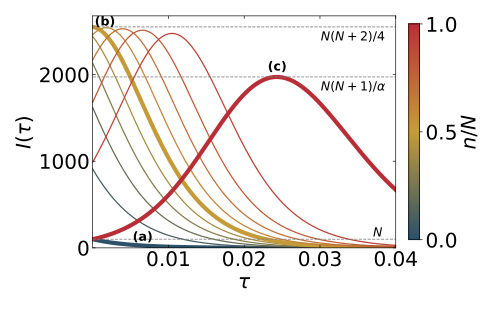
<figcaption class="paper-figure-caption"><b>Fig 1.</b> FIG. 1: Intensity of the Dicke states |j, n −j⟩for N = 100, with bold lines for n = 1(a), 50(b), 100(c) to highlight the low, central, and high excitation regimes. Dashed lines were added for the peak of the pulse to ease the scale. The initial intensity is equal to λn 2Γ = n(N −n + 1). The peak intensity of the all-excited state (n = N) is given by the asymptotic numerical formula I = N(N+1)</figcaption>
</figure>
<figure class="paper-figure-card">
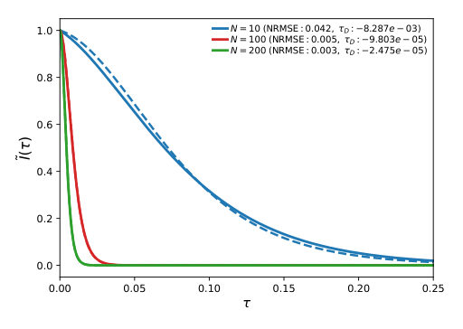
<figcaption class="paper-figure-caption"><b>Fig 2.</b> FIG. 2: The CDS |j, 0⟩is plotted for N = 10, 100, 200 atoms, with the NRMSE and pulse-delay in brackets.</figcaption>
</figure>
<figure class="paper-figure-card">
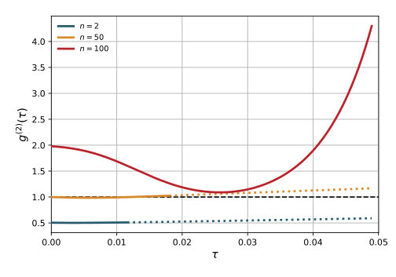
<figcaption class="paper-figure-caption"><b>Fig 3.</b> FIG. 3: The Glauber function for Dicke states, calculated for N = 100 for n = 2, 50, 100. The lines have been cut after the intensity reaches 10% of its peak value: That is where the dotted lines are shown for continuity. Reference black dashed lines were added for the Poissonian limit, g(2)(τ) = 1.</figcaption>
</figure>
<figure class="paper-figure-card">
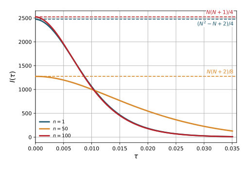
<figcaption class="paper-figure-caption"><b>Fig 4.</b> FIG. 4: The intensity of RDS for N = 100, with n = 1, 50, 100 highlighted. Notice now that all states peak initially, and the general formula for the peak intensity is In(0) = N(N+1)−2n(N−n)</figcaption>
</figure>
<figure class="paper-figure-card">
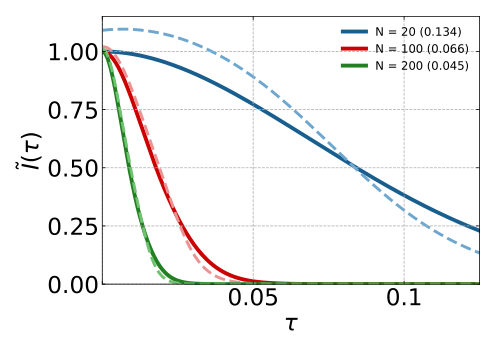
<figcaption class="paper-figure-caption"><b>Fig 5.</b> FIG. 5: The RDS Emission intensity I(τ) normalized with I0,RDS to highlight the MF approximation. Solid lines are the simulation’s result, whereas the dashed lines are the MF solution in Eq.(18). In brackets, we have shown the NRMSE for N = 20, 100, and 200.</figcaption>
</figure>
</div>

<p><strong>Summary.</strong> This paper theoretically analyzes the superradiant emission from an ensemble of atoms initialized in different quantum spin states. By employing mean-field approximations and solving master equations, the authors distinguish between decay mechanisms driven by simple fluctuations versus those involving macroscopic dipole moments. The results provide a detailed diagnostic tool using intensity and correlation functions to characterize these complex collective light emission processes.</p>
<p><strong>Why it may be interesting.</strong> This work provides a detailed quantitative comparison of superradiant decay dynamics across various non-classical initial states, which is fundamental to understanding collective light-matter interactions in cavity QED systems.</p>
<details>
<summary>Detailed structure</summary>
<p><strong>Main problem.</strong> The study investigates how the decay dynamics of superradiant emission differ based on the initial collective spin state of an ensemble of atoms.</p>
<p><strong>Main result.</strong> Different initial states (e.g., Coherent Dipole States vs. Atomic Coherent States) exhibit distinct emission profiles and photon statistics, which can be distinguished by analyzing intensity and correlation functions.</p>
<p><strong>Method.</strong> The dynamics are analyzed using the master equation approach, solved via mean-field approximations leading to Fokker-Planck equations for large N, alongside exact solutions in the Dicke basis.</p>
<p><strong>Model / system.</strong> The system models $N$ identical two-level atoms interacting with a cavity mode, governed by a master equation. Key states analyzed include Dicke states, Atomic Coherent States (ACS), and Squeezed Dicke States (SDS).</p>
<p><strong>Key observables.</strong> Mean emission intensity ($I(	au)$), normalized second-order correlation function ($g^{(2)}(	au)$), and phase uncertainty ($\Delta\varphi$).</p>
<p><strong>Important parameters / regimes.</strong> The number of atoms ($N$), the squeezing parameter ($r$), and the excitation fraction ($n/N$) are crucial parameters defining the initial state.</p>
<p><strong>Assumptions / limitations.</strong> The analysis heavily relies on the mean-field approximation for large $N$, which simplifies the master equation into a Fokker-Planck equation, though this introduces limitations regarding diffusion terms.</p>
<p><strong>Figures summary.</strong> Figures compare intensity profiles ($I(	au)$) and Glauber functions ($g^{(2)}(	au)$) across various states (CDS, RDS, ACS), illustrating differences in decay dynamics and photon statistics.</p>
<p><strong>Paper structure.</strong> The paper systematically compares superradiant decay from different initial spin states. It develops theoretical tools like the mean-field approximation for large N, derives analytical solutions for specific state types (like SDS), and contrasts the physical mechanisms driving emission based on quantum fluctuations versus macroscopic dipole moments.</p>
</details>
<details>
<summary>Abstract</summary>
<p>Superradiance is an extensive cooperative spontaneous emission phenomenon. Some atomic collective spin states exhibit it. However, distinct initial states differ in their decay dynamics. Dicke states with different numbers of excitations have their peak emission intensity shifted in time depending on the number of excitations. Emission intensity in atomic coherent states depends on their polarization. Some specific states undergo a squeezing controlled crossover, making the emission character dependent on the amount of squeezing in the state. We present detailed results on the superradiant dynamics of a representative selection of Dicke states. For large N, we are able to predict fairly accurately the pulse profile in each case using the mean field approximation, an approach based on the Fokker Planck Equation. We also present results on the intensity correlation function of the emission.</p>
</details>
<p><sub><a href="#top">↑ back to top</a></sub></p>

<p><a id="paper-2606.15120"></a></p>
<h3 id="information-is-not-physical-possibility-spaces-erasure-and-the-structure-of-unrealized-alternatives"><a href="http://arxiv.org/abs/2606.15120v1">Information Is Not Physical: Possibility Spaces, Erasure, and the Structure of Unrealized Alternatives</a></h3>
<p><strong>Authors:</strong> Madhurendra Mishra<br>
<strong>Type:</strong> theory · <strong>Category:</strong> other · <strong>PDF:</strong> <a href="https://arxiv.org/pdf/2606.15120v1">https://arxiv.org/pdf/2606.15120v1</a><br>
<strong>Analysis basis:</strong> full PDF text, analyzed in chunks
<strong>Topic relevance:</strong> 🔥 <code>entanglement &amp; information structure</code> <strong>4/5</strong> · <code>measurement-induced transitions</code> <strong>3/5</strong> · <code>quantum measurements</code> <strong>3/5</strong> · <code>correlated / nonlocal dissipation</code> <strong>2/5</strong> · <code>driven-dissipative phase transition</code> <strong>2/5</strong> · <code>Keldysh / 2PI / non-Gaussian methods</code> <strong>1/5</strong> · <code>methods for driven-dissipative</code> <strong>1/5</strong> · <code>non-equilibrium dynamics</code> <strong>1/5</strong> · <code>non-equilibrium universality</code> <strong>1/5</strong></p>
<div class="figure-strip-hint">↔ Scroll figures horizontally</div>
<div class="paper-figures-scroll">
<figure class="paper-figure-card">
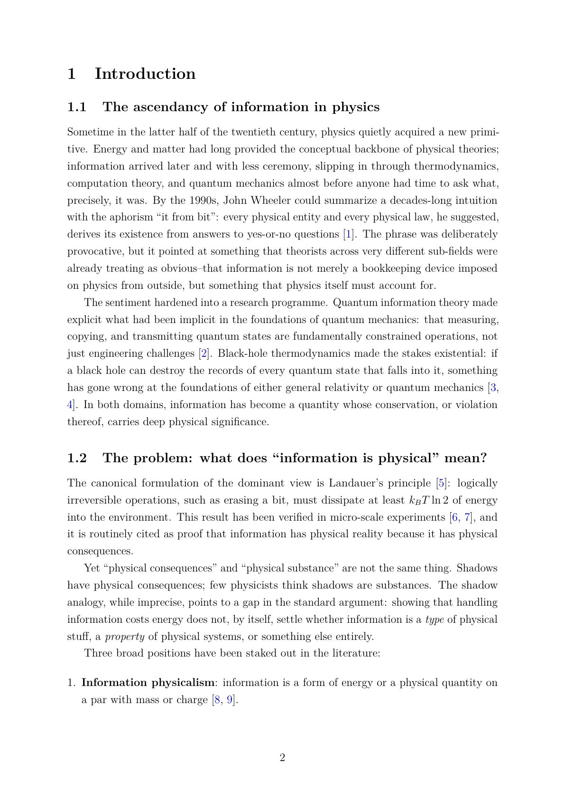
<figcaption class="paper-figure-caption"><b>Fig 1.</b> Low-resolution page preview, page 2</figcaption>
</figure>
<figure class="paper-figure-card">
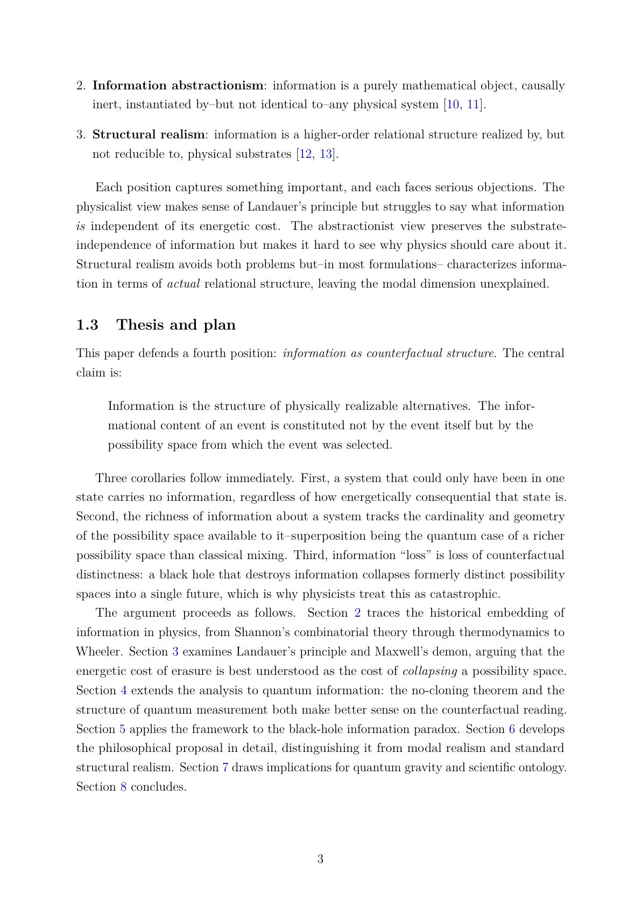
<figcaption class="paper-figure-caption"><b>Fig 2.</b> Low-resolution page preview, page 3</figcaption>
</figure>
<figure class="paper-figure-card">
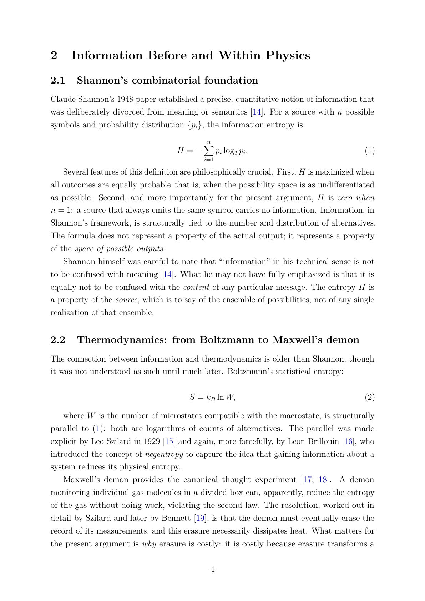
<figcaption class="paper-figure-caption"><b>Fig 3.</b> Low-resolution page preview, page 4</figcaption>
</figure>
<figure class="paper-figure-card">
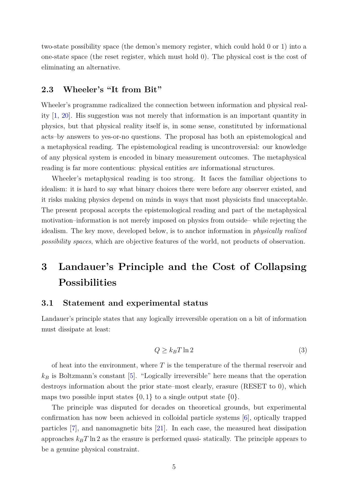
<figcaption class="paper-figure-caption"><b>Fig 4.</b> Low-resolution page preview, page 5</figcaption>
</figure>
<figure class="paper-figure-card">
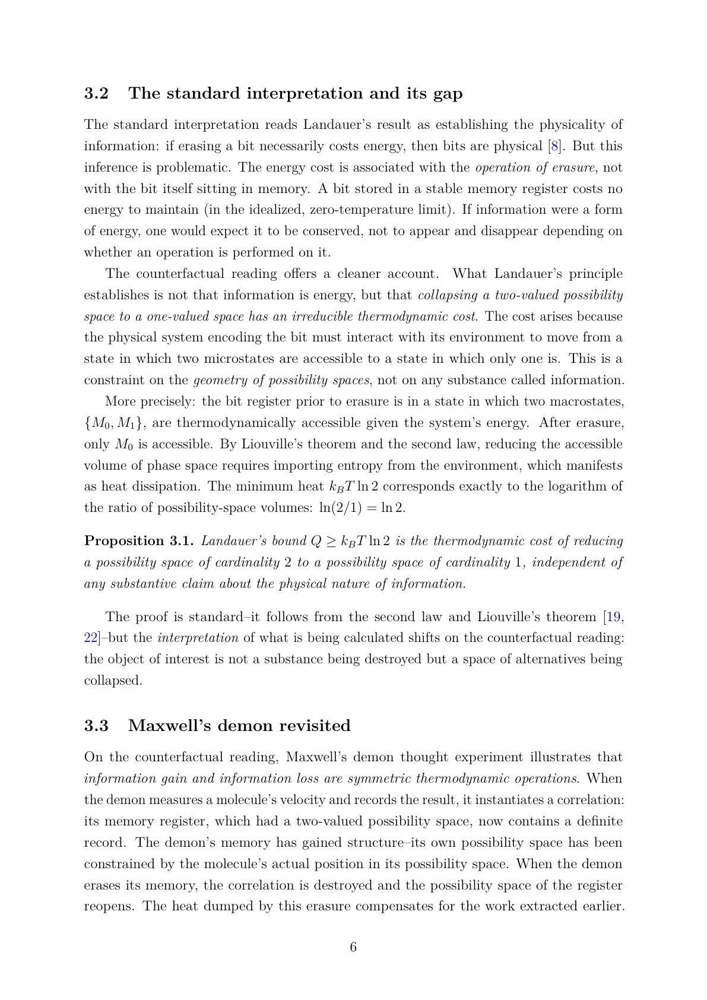
<figcaption class="paper-figure-caption"><b>Fig 5.</b> Low-resolution page preview, page 6</figcaption>
</figure>
</div>

<p><strong>Summary.</strong> This paper argues that information is fundamentally the structure defined by all physically possible outcomes an event <em>could</em> have taken, rather than being a physical thing or just math. By applying this 'counterfactual reading' to thermodynamics and black holes, it offers a unified structural view of how processes like erasure and evaporation constrain reality. It suggests that understanding possibility spaces is key to advancing quantum gravity and foundational physics.</p>
<p><strong>Why it may be interesting.</strong> It provides a deep philosophical framework that reinterprets core concepts like measurement collapse and entanglement in terms of structural limitations on possibility spaces, which has implications for understanding open quantum systems dynamics.</p>
<details>
<summary>Detailed structure</summary>
<p><strong>Main problem.</strong> The ontological status of 'information' in physics, specifically reconciling concepts like Landauer's principle, quantum mechanics, and black hole thermodynamics without resorting to idealism.</p>
<p><strong>Main result.</strong> Information is proposed not as a physical substance or pure abstraction, but as the objective structure of physically realizable alternatives (a counterfactual structure).</p>
<p><strong>Method.</strong> The paper develops a 'counterfactual reading' by analyzing how thermodynamic costs and quantum constraints relate to the possibility space available to a system.</p>
<p><strong>Model / system.</strong> The analysis draws upon fundamental physical concepts including Shannon entropy, Landauer's principle, the no-cloning theorem, and the information paradox in black hole evaporation.</p>
<p><strong>Key observables.</strong> Shannon Entropy ($H$), thermodynamic heat dissipation ($Q \geq k_B T \ln 2$), and the preservation/loss of counterfactual distinctness across physical processes.</p>
<p><strong>Important parameters / regimes.</strong> Temperature ($T$), Boltzmann constant ($k_B$), and the cardinality/geometry of the possibility space ($\Omega$).</p>
<p><strong>Assumptions / limitations.</strong> The framework assumes that probability distributions are grounded in objective, physically existing possibilities rather than merely epistemic knowledge.</p>
<p><strong>Paper structure.</strong> The paper progresses by establishing the problem (ontological status of information), refining the concept using Landauer's principle and quantum constraints (superposition vs. classical mixture), applying this to black hole evaporation, and concluding with a proposal for modal-structural realism.</p>
</details>
<details>
<summary>Abstract</summary>
<p>The slogan <code>information is physical,'' introduced by Rolf Landauer and developed through quantum information theory and black-hole thermodynamics, has achieved near-axiomatic status in modern physics. Yet the ontological status of information remains surprisingly underexamined: most discussions either reduce information to a form of energy or treat it as a purely mathematical object. This paper proposes a third position. I argue that information is neither a physical substance nor a free-floating abstraction, but rather \emph{the structure of physically realizable alternatives} -- a counterfactual structure that a physical system instantiates in virtue of the possibility space available to it. Building on Shannon's combinatorial definition, the Landauer principle, the no-cloning theorem, and the black-hole information paradox, I show that the informational content of any physical event is constituted by the set of outcomes that \emph{could have occurred} but did not. This counterfactual reading dissolves several persistent confusions: it explains why erasing information dissipates heat without making information</code>material,'' why quantum superposition is informationally richer than any classical mixture, and why information loss in black holes is physically significant beyond mere bookkeeping. The proposal sits within a structural-realist framework but departs from standard structural realism by locating the relevant structure in modal, not merely actual, relations. I conclude by sketching implications for the foundations of quantum mechanics, quantum gravity, and scientific ontology more broadly.</p>
</details>
<p><sub><a href="#top">↑ back to top</a></sub></p>

<p><a id="paper-2606.14842"></a></p>
<h3 id="measuring-non-stabilizerness-in-an-su2-lattice-gauge-theory"><a href="http://arxiv.org/abs/2606.14842v1">Measuring Non-Stabilizerness in an SU(2) Lattice Gauge Theory</a></h3>
<p><strong>Authors:</strong> Henry Froland, Dorota M. Grabowska<br>
<strong>Type:</strong> both · <strong>Category:</strong> quantum information and computing · <strong>PDF:</strong> <a href="https://arxiv.org/pdf/2606.14842v1">https://arxiv.org/pdf/2606.14842v1</a><br>
<strong>Analysis basis:</strong> full PDF text, analyzed in chunks
<strong>Topic relevance:</strong> 🔥 <code>analog quantum simulation</code> <strong>4/5</strong> · <code>entanglement &amp; information structure</code> <strong>3/5</strong> · <code>methods for driven-dissipative</code> <strong>3/5</strong> · <code>quantum measurements</code> <strong>3/5</strong> · <code>measurement-induced transitions</code> <strong>2/5</strong> · <code>Keldysh / 2PI / non-Gaussian methods</code> <strong>1/5</strong> · <code>QC/QI experiment</code> <strong>1/5</strong> · <code>driven-dissipative phase transition</code> <strong>1/5</strong></p>
<div class="figure-strip-hint">↔ Scroll figures horizontally</div>
<div class="paper-figures-scroll">
<figure class="paper-figure-card">
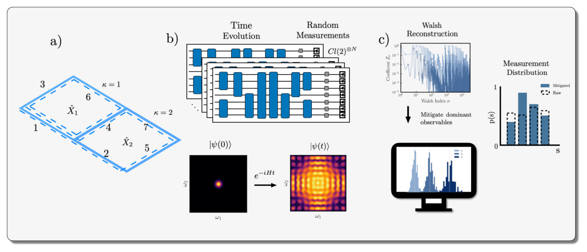
<figcaption class="paper-figure-caption"><b>Fig 1.</b> FIG. 1: Digital Quantum Simulation of Two Plaquettes a) The two-plaquette system with open boundary conditions is gauge-fixed using max tree gauge fixing. The system contains seven links, numbered 1 through 7, with the physical links denoted as κ = 1, 2. The magnetic degrees of freedom ˆX1, ˆX2 are associated with each plaquette. The dashed lines that run around each plaquette denote the loops used in the max tree gauge-fixing procedure. b) The digitized Hamiltonian is compiled into digital quantum gates via Trotterization that approximate e−iHt. Shown below the circuit diagram is an example of initial state amplitudes given by a smooth gaussian profile in ω1, ω2 and the final amplitudes...</figcaption>
</figure>
<figure class="paper-figure-card">
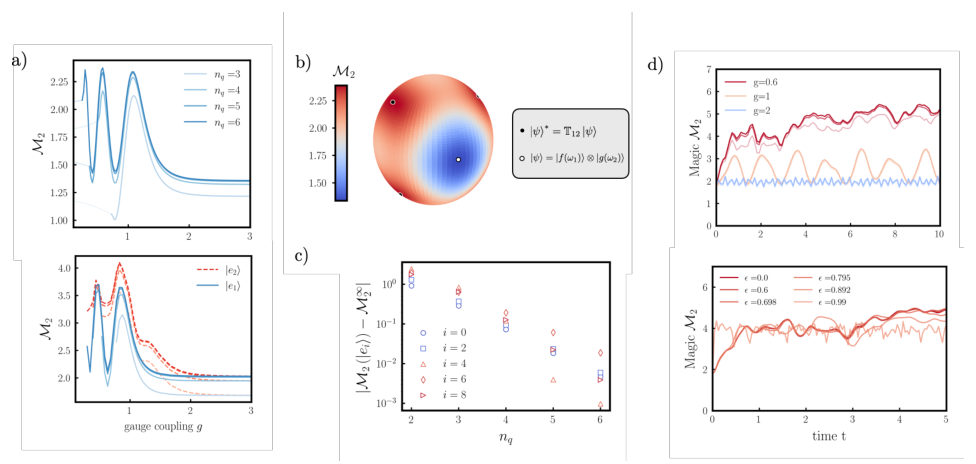
<figcaption class="paper-figure-caption"><b>Fig 2.</b> FIG. 2: Non-Stabilizerness of Low-Energy Eigenstates a) Non-stabilizerness of ground state |e0⟩(top) and first two excited eigenstates |e1⟩, |e2⟩(bottom). For large gauge coupling, the non-stabilizerness plateaus to a constant value for |e1⟩, |e2⟩, which are degenerate in this limit. For a fixed resolution, once a certain coupling is reached, the ωmax truncation begins to decrease from 2π, causing the effective support of the wavefunction over ω1 −ω2 to change at a different rate with g, which is signified by the transparent lines (these lines are not shown for the bottom plot). b) Non-stabilizerness in degenerate subspace S12. The states that have the minimum non-stabilizerness in this...</figcaption>
</figure>
<figure class="paper-figure-card">
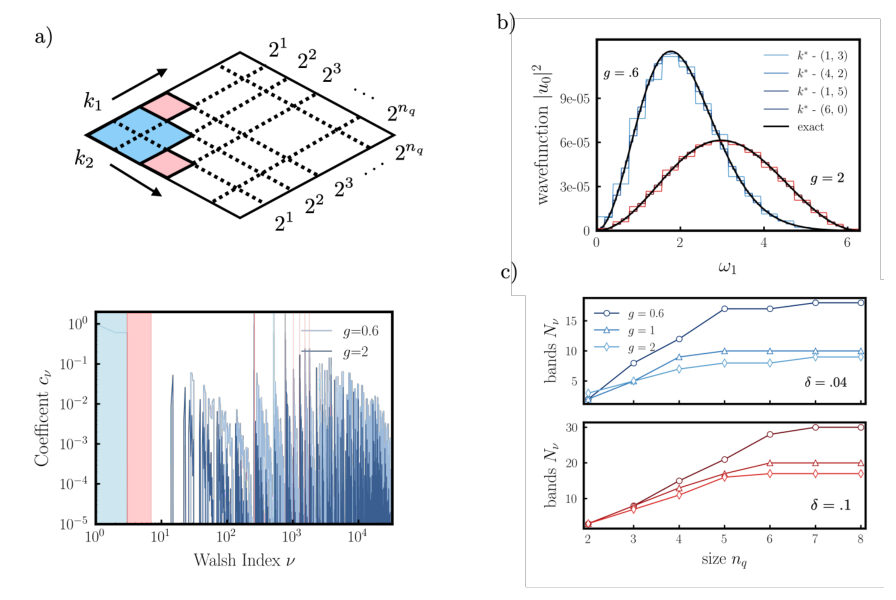
<figcaption class="paper-figure-caption"><b>Fig 3.</b> FIG. 3: Walsh Hierarchy of Smooth Wavefunctions a) Different Walsh bands for two-dimensional function of ω1, ω2 (top) with Walsh indices and associated coefficients (below). The lowest, most significant, bands are highlighted in blue, and the next most significant are shown in red. The strategy to reconstruct the wavefunction involves starting from the shells closest to the origin and working out in each direction. Once a shell is filled, the next shell starts being filled. b) Reconstructed wavefunction probability density for fixed ω2 at different Walsh cutoffs k∗. The solid black lines correspond to exact reconstruction where the cutoff is removed. Both a strong coupling wavefunction at g...</figcaption>
</figure>
<figure class="paper-figure-card">
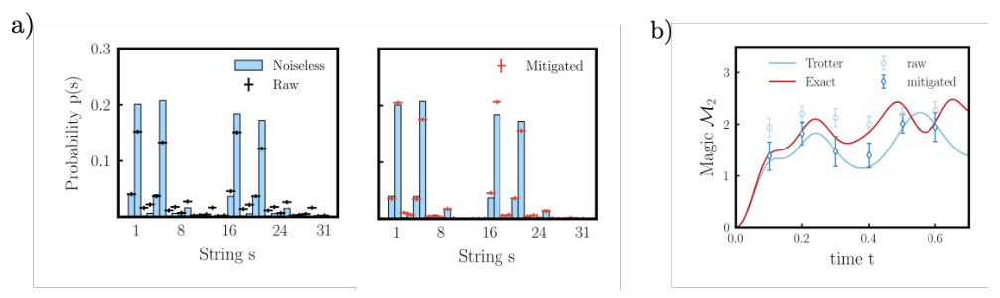
<figcaption class="paper-figure-caption"><b>Fig 4.</b> FIG. 4: Quantum Measurement of non-Stabilizerness a) Bitstring distributions for specific instance of random Cliffords. The raw data (left) shows small populations of many bitstrings whose populations are spuriously amplified by the noise of the quantum device. The bitstring distribution after application of BSDR (right) removes these spurious populations and restores much of the probability mass to the true bitstring. b) Values of non-stabilizerness over time. The solid lines correspond to evolution due to the exact propagator and the Trotterized circuit. The circles represent the calculations from the raw data and the diamonds represent the mitigated data. The raw data is almost constant,...</figcaption>
</figure>
</div>

<p><strong>Summary.</strong> This work develops methods to measure non-stabilizerness—a measure of quantum complexity—in SU(2) Lattice Gauge Theory simulations. It addresses hardware limitations by introducing Bit String Decoherence Renormalization (BSDR) and utilizing advanced estimators based on the Walsh-Hadamard transform. The results demonstrate how complex physical properties can be extracted from noisy quantum measurements.</p>
<p><strong>Why it may be interesting.</strong> It provides a concrete, quantifiable metric (non-stabilizerness) for assessing the feasibility of simulating complex quantum field theories on current noisy intermediate-scale quantum (NISQ) devices.</p>
<details>
<summary>Detailed structure</summary>
<p><strong>Main problem.</strong> The study quantifies quantum complexity, specifically non-stabilizerness, for simulating lattice gauge theories on near-term quantum hardware.</p>
<p><strong>Main result.</strong> Non-stabilizerness is shown to be a measurable quantity that exhibits predictable convergence behavior with increasing digitization resolution and can be accurately estimated using advanced error mitigation techniques like BSDR.</p>
<p><strong>Method.</strong> The work employs randomized measurement protocols, novel estimators derived via the Walsh-Hadamard transform, and the Bit String Decoherence Renormalization (BSDR) technique to mitigate noise effects on bitstring probability distributions.</p>
<p><strong>Model / system.</strong> The system analyzed is SU(2) Lattice Gauge Theory restricted to two plaquettes. The simulation involves mapping the continuous gauge field Hilbert space onto a finite qudit register via digitization and studying low-energy eigenstates.</p>
<p><strong>Key observables.</strong> Non-stabilizerness ($M_2$ or $S_2$), Stabilizer Rényi Entropy, Total Variational Distance (TVD), and bitstring probability distributions $p(s)$.</p>
<p><strong>Important parameters / regimes.</strong> Gauge coupling constant ($g$), digitization resolution ($n_q$), and the error mitigation parameters ($\epsilon$).</p>
<p><strong>Assumptions / limitations.</strong> The analysis assumes that low-energy wavefunctions can be approximated by smooth functions, allowing for efficient reconstruction of probability distributions using Walsh coefficients.</p>
<p><strong>Figures summary.</strong> Figures illustrate the setup (gauge fixing/digitization), the dependence of non-stabilizerness on gauge coupling and resolution, and diagrams detailing the structure of the Walsh hierarchy used for error mitigation.</p>
<p><strong>Paper structure.</strong> The paper progresses from defining the physical system and complexity measure to developing advanced measurement protocols (WH transform estimators) and finally introducing novel error mitigation techniques (BSDR) validated against theoretical bounds (TVD).</p>
</details>
<details>
<summary>Abstract</summary>
<p>One of the goals of quantum simulation is to provide novel insights into quantum systems, such as the gauge theories that are relevant for high-energy and nuclear physics. Recent years have seen rapid improvements in both the hardware and software necessary for these simulations. A central consideration in the design of such simulations is the quantum complexity of a given quantum state. This work takes a step towards studying a specific kind of complexity, namely the non-stabilizerness, in a simple yet non-trivial system: SU(2) lattice gauge theory of two plaquettes. The non-stabilizerness of low-energy eigenstates is studied and the implications for quantum simulations are discussed. The real-time evolution of this system is simulated on ibm_marrakesh and the non-stabilizerness is measured using a random measurement protocol. New techniques enhancing the efficiency of this protocol are developed, including both a new way to calculate the estimator for non-stabilizerness and a flexible error mitigation technique called Bit String Decoherence Renormalization. This mitigation method is central to accurately resolving the experimental time dependence of non-stabilizerness, and is anticipated to have broad applicability in digital quantum simulations.</p>
</details>
<p><sub><a href="#top">↑ back to top</a></sub></p>

<p><a id="paper-2606.16791"></a></p>
<h3 id="riviera-model-with-egoistical-settlers"><a href="http://arxiv.org/abs/2606.16791v1">Riviera model with egoistical settlers</a></h3>
<p><strong>Authors:</strong> P. L. Krapivsky<br>
<strong>Type:</strong> theory · <strong>Category:</strong> statistical mechanics · <strong>PDF:</strong> <a href="https://arxiv.org/pdf/2606.16791v1">https://arxiv.org/pdf/2606.16791v1</a><br>
<strong>Analysis basis:</strong> full PDF text, analyzed in chunks
<strong>Topic relevance:</strong> 🔥 <code>Keldysh / 2PI / non-Gaussian methods</code> <strong>4/5</strong> · <code>methods for driven-dissipative</code> <strong>3/5</strong> · <code>non-equilibrium dynamics</code> <strong>3/5</strong> · <code>non-equilibrium universality</code> <strong>3/5</strong> · <code>driven-dissipative phase transition</code> <strong>2/5</strong> · <code>Frenkel-Kontorova</code> <strong>1/5</strong> · <code>analog quantum simulation</code> <strong>1/5</strong> · <code>correlated / nonlocal dissipation</code> <strong>1/5</strong></p>
<div class="figure-strip-hint">↔ Scroll figures horizontally</div>
<div class="paper-figures-scroll">
<figure class="paper-figure-card">
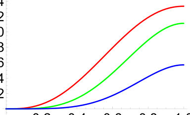
<figcaption class="paper-figure-caption"><b>Fig 1.</b> FIG. 1. The densities Z1, Z2, Z3 (top to bottom) are growing functions of time. This is a common feature of all densities Zs. The final jammed densities are Π1 = 2 15, Π2 = 1</figcaption>
</figure>
<figure class="paper-figure-card">
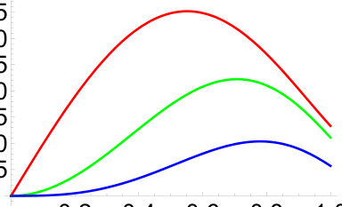
<figcaption class="paper-figure-caption"><b>Fig 2.</b> FIG. 2. The cluster densities P1, P2, P3 (top to bottom) versus the auxiliary time τ = 1 −e−t. Cluster densities Ps(τ) are unimodal distributions with a single peak at τs given by (36);</figcaption>
</figure>
<figure class="paper-figure-card">
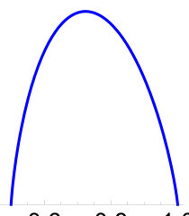
<figcaption class="paper-figure-caption"><b>Fig 3.</b> FIG. 5. The configurational entropy σ versus the density ρ of houses in the jammed state. The analytical expression for σ(ρ) is given by Eq. (B3). The entropy reaches maximum σ∗= σ(ρ∗) = ArcCoth √</figcaption>
</figure>
</div>

<p><strong>Summary.</strong> This paper rigorously analyzes the statistical mechanics of the Riviera model, a 1D process mimicking constrained settlement. It derives exact formulas for the cluster size distribution and correlation functions in the jammed state by solving complex differential equations. The work provides deep insights into how local constraints dictate global structural properties in disordered systems.</p>
<p><strong>Why it may be interesting.</strong> The mathematical techniques used—solving complex, infinite sets of coupled differential equations via ansatzes—are highly relevant for modeling non-equilibrium dynamics in many-body systems, analogous to those studied in quantum field theory or open quantum systems.</p>
<details>
<summary>Detailed structure</summary>
<p><strong>Main problem.</strong> The primary goal is characterizing the jammed state of a one-dimensional settlement model (Riviera model) and deriving its cluster size distribution and correlation functions.</p>
<p><strong>Main result.</strong> In the jammed state, the cluster size distribution follows an exact factorial decay ($\Pi_s \propto 1/(s+2)!$), and the average number of empty sites in a finite segment scales linearly with length ($L/3 + 1/3$).</p>
<p><strong>Method.</strong> The analysis employs dynamic evolution equations for void densities, solved using exponential ansatzes, alongside static combinatorial methods for calculating correlation functions.</p>
<p><strong>Model / system.</strong> The Riviera model (RM) simulates densifying settlement on a line segment. It is analyzed in both discrete and continuum forms, involving parameters like the separation threshold $\epsilon$.</p>
<p><strong>Key observables.</strong> Cluster size distribution ($\Pi_s$), void-cluster-void distribution, connected pair correlation functions ($C_j$), average number of empty sites ($\langle N 
angle_L$), and configurational entropy ($\sigma(
ho)$).</p>
<p><strong>Important parameters / regimes.</strong> The parameter $\epsilon$ governs the generalization of the model; key regimes include $\epsilon=0$, $\epsilon=1$, and the maximum entropy density $
ho^*$.</p>
<p><strong>Assumptions / limitations.</strong> The analysis often relies on exponential ansatzes to solve infinite sets of coupled differential equations, and approximations are made when calculating higher-order correlations.</p>
<p><strong>Figures summary.</strong> Figures illustrate the configurational entropy ($\sigma$) versus density ($
ho$), showing a maximum at $
ho^*$, and depict how jamming densities $
ho_{    ext{jam}}(\epsilon)$ vary with the parameter $\epsilon$.</p>
<p><strong>Paper structure.</strong> The paper progresses from analyzing the dynamic evolution of void patterns (using ODEs and ansatzes) to determining the exact cluster size distribution in the jammed state. It then extends to calculating pair correlation functions ($C_j$) and finally tackles finite-size statistics using generating functions and continuum limits.</p>
</details>
<details>
<summary>Abstract</summary>
<p>The Riviera model mimics a densifying settlement along the coastline. In the lattice version, houses are built sequentially in empty sites with the constraint that every newly built house has at least one empty neighboring site. The distribution of clusters of adjacent houses does not obey a closed set of evolutionary equations, but the void-cluster-void distribution does. We compute the latter and extract the cluster distribution from it. In the jammed state, when all voids have length one and the evolution ceases, the cluster distribution has a neat form and exhibits a factorial decay with the length of the cluster. To investigate finite systems, we employ a static approach directly treating jammed states. If the coastline is a finite segment, we determine the statistics of the number of empty sites in the jammed state (the average, variance, and higher cumulants). We also study a continuum version in which houses are built along the line so that each newly built house is sufficiently separated from at least one neighboring house.</p>
</details>
<p><sub><a href="#top">↑ back to top</a></sub></p>

<p><a id="paper-2606.16695"></a></p>
<h3 id="high-dimensional-coherence-to-entanglement-transduction-under-canonical-noise"><a href="http://arxiv.org/abs/2606.16695v1">High-dimensional coherence to entanglement transduction under canonical noise</a></h3>
<p><strong>Authors:</strong> Asad Ali, Aiham M. Rostom, Saif Al-Kuwari, H. Kuniyil, M. T. Rahim, Saeed Haddadi<br>
<strong>Type:</strong> theory · <strong>Category:</strong> quantum information and computing · <strong>PDF:</strong> <a href="https://arxiv.org/pdf/2606.16695v1">https://arxiv.org/pdf/2606.16695v1</a><br>
<strong>Analysis basis:</strong> full PDF text, analyzed in chunks
<strong>Topic relevance:</strong> 🔥 <code>entanglement &amp; information structure</code> <strong>4/5</strong> · <code>correlated / nonlocal dissipation</code> <strong>3/5</strong> · <code>methods for driven-dissipative</code> <strong>3/5</strong> · <code>driven-dissipative phase transition</code> <strong>2/5</strong> · <code>non-equilibrium dynamics</code> <strong>2/5</strong> · <code>Keldysh / 2PI / non-Gaussian methods</code> <strong>1/5</strong> · <code>non-equilibrium universality</code> <strong>1/5</strong></p>
<div class="figure-strip-hint">↔ Scroll figures horizontally</div>
<div class="paper-figures-scroll">
<figure class="paper-figure-card">
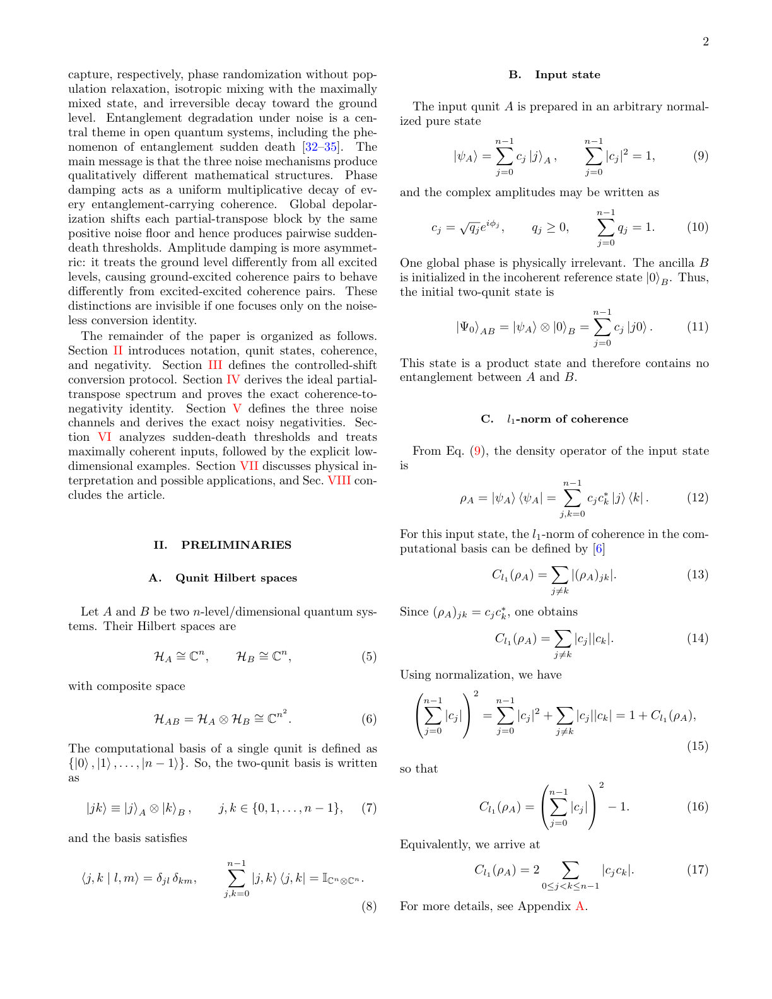
<figcaption class="paper-figure-caption"><b>Fig 1.</b> Low-resolution page preview, page 2</figcaption>
</figure>
<figure class="paper-figure-card">
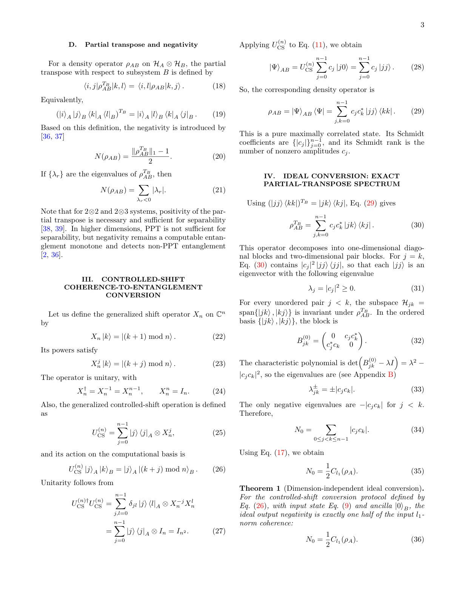
<figcaption class="paper-figure-caption"><b>Fig 2.</b> Low-resolution page preview, page 3</figcaption>
</figure>
<figure class="paper-figure-card">
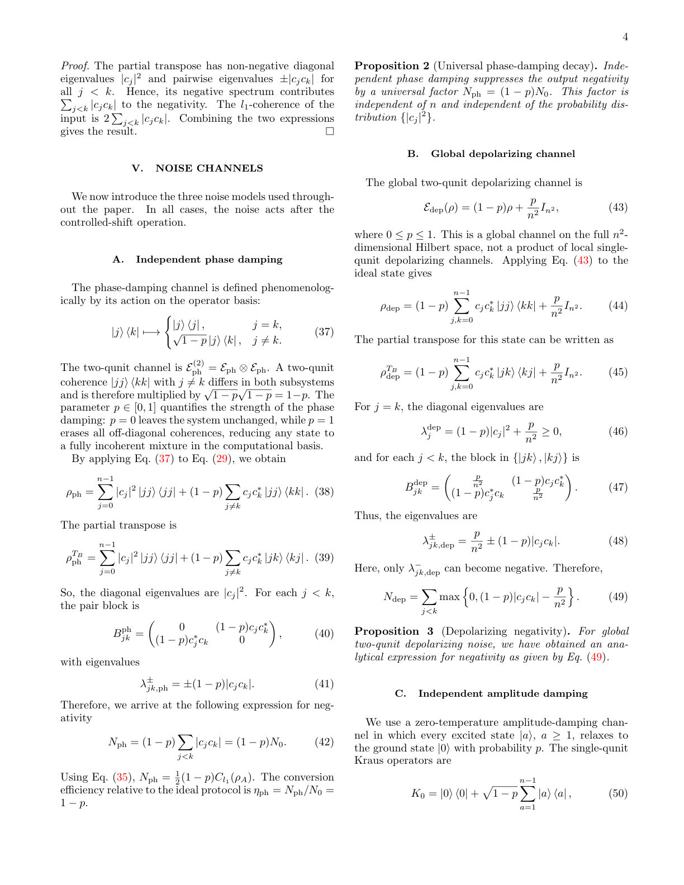
<figcaption class="paper-figure-caption"><b>Fig 3.</b> Low-resolution page preview, page 4</figcaption>
</figure>
<figure class="paper-figure-card">
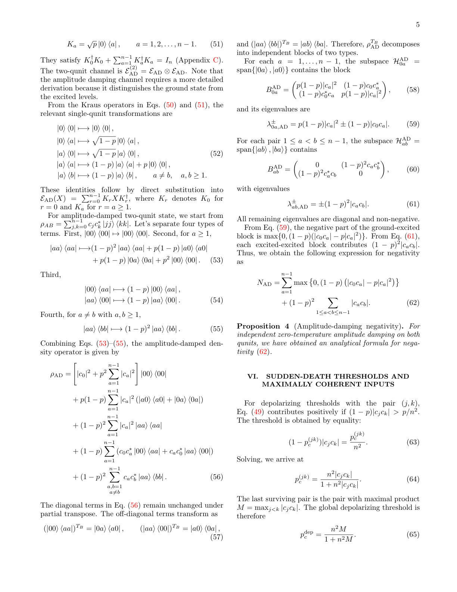
<figcaption class="paper-figure-caption"><b>Fig 4.</b> Low-resolution page preview, page 5</figcaption>
</figure>
<figure class="paper-figure-card">
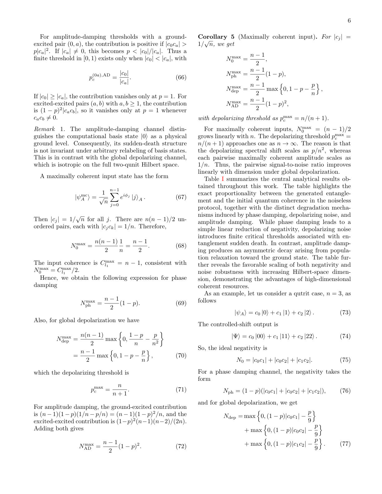
<figcaption class="paper-figure-caption"><b>Fig 5.</b> Low-resolution page preview, page 6</figcaption>
</figure>
</div>

<p><strong>Summary.</strong> This paper develops a theoretical framework to quantify the conversion of coherence into entanglement in high-dimensional qudit systems. It rigorously analyzes how this generated entanglement degrades when subjected to phase damping, global depolarization, or amplitude damping. The results provide distinct analytical benchmarks for assessing noisy quantum resource generation.</p>
<p><strong>Why it may be interesting.</strong> This work provides rigorous analytical benchmarks for understanding resource conversion (coherence to entanglement) in high-dimensional quantum systems, which is crucial for designing robust quantum communication protocols that operate under realistic noise conditions.</p>
<details>
<summary>Detailed structure</summary>
<p><strong>Main problem.</strong> The study develops an analytical framework to quantify how initial quantum coherence is converted into entanglement within high-dimensional quantum systems (qunits) and analyzes the subsequent degradation of this entanglement under various noise channels.</p>
<p><strong>Main result.</strong> The ideal conversion establishes a dimension-independent identity between input $\ell_1$-norm of coherence and output negativity. Different noise types degrade entanglement in distinct ways: phase damping causes uniform decay, depolarizing noise introduces pairwise sudden death thresholds, and amplitude damping shows asymmetric relaxation.</p>
<p><strong>Method.</strong> The analysis relies on calculating the negativity (a measure derived from the partial transpose) of the resulting bipartite state after applying controlled-shift operations followed by specific quantum noise channels.</p>
<p><strong>Model / system.</strong> The system involves two qudits ($A \otimes B$, dimension $n$), where one qudit acts as a coherent input and the other is an incoherent ancilla. The process models coherence-to-entanglement conversion via a generalized controlled-shift operation.</p>
<p><strong>Key observables.</strong> Negativity ($N$), $\ell_1$-norm of coherence ($C_{\ell_1}$), entanglement sudden death thresholds, and decay factors for the negativity under noise.</p>
<p><strong>Important parameters / regimes.</strong> System dimension ($n$), noise strength parameters (e.g., $p$ for damping), and the coefficients defining the input coherent state $|\psi_A
angle$.</p>
<p><strong>Assumptions / limitations.</strong> The analysis assumes that the three canonical noise channels—phase damping, global depolarizing noise, and amplitude damping—are applied sequentially after the initial controlled-shift operation.</p>
<p><strong>Figures summary.</strong> Not specified in detail, but the notes imply tables summarizing general expressions for negativity under different noise models (e.g., Table I).</p>
<p><strong>Paper structure.</strong> The paper first establishes the ideal conversion identity ($N_0 \propto C_{\ell_1}$). It then systematically analyzes the effect of three distinct noise channels—phase damping, global depolarization, and amplitude damping—on this generated entanglement, deriving specific decay laws for each.</p>
</details>
<details>
<summary>Abstract</summary>
<p>We develop an analytical framework for coherence-to-entanglement conversion in bipartite high-dimensional quantum systems, so-called qunits. An arbitrary coherent input qunit is coupled to an incoherent ancilla through a generalized controlled-shift operation, producing a maximally correlated bipartite state. By analyzing the partial transpose of the output state, we establish an exact dimension-independent connection between the input coherence and the generated entanglement. We then study how this conversion is affected by three standard noise processes applied after the conversion step: phase damping, global depolarizing noise, and independent amplitude damping. The resulting expressions show that these channels degrade entanglement in qualitatively different ways. Phase damping leads to a uniform attenuation of the entanglement generated from coherence, depolarizing noise introduces pairwise thresholds associated with entanglement sudden death, and amplitude damping produces an asymmetric decay governed by relaxation toward the ground state. For maximally coherent inputs, the general results reduce to simple closed-form behavior, allowing direct comparison of the three noise mechanisms as the system dimension increases. In particular, global depolarizing noise exhibits a dimension-dependent sudden-death threshold, while amplitude damping leads to a smooth suppression in the maximally coherent case. These results provide useful analytical benchmarks for high-dimensional resource conversion and for assessing noisy entanglement generation in qudit-based quantum-information settings.</p>
</details>
<p><sub><a href="#top">↑ back to top</a></sub></p>

<p><a id="paper-2606.15518"></a></p>
<h3 id="suppressing-intrinsic-spin-phonon-errors-in-trapped-ion-quantum-simulation"><a href="http://arxiv.org/abs/2606.15518v1">Suppressing Intrinsic Spin-Phonon Errors in Trapped-Ion Quantum Simulation</a></h3>
<p><strong>Authors:</strong> Dylan Sheils, James Wang, Or Katz<br>
<strong>Type:</strong> theory · <strong>Category:</strong> other · <strong>PDF:</strong> <a href="https://arxiv.org/pdf/2606.15518v1">https://arxiv.org/pdf/2606.15518v1</a><br>
<strong>Analysis basis:</strong> full PDF text, analyzed in chunks
<strong>Topic relevance:</strong> 🔥 <code>analog quantum simulation</code> <strong>4/5</strong> · <code>exotic spin models in light-matter</code> <strong>3/5</strong> · <code>QC/QI experiment</code> <strong>2/5</strong> · <code>non-equilibrium dynamics</code> <strong>2/5</strong> · <code>correlated / nonlocal dissipation</code> <strong>1/5</strong> · <code>entanglement &amp; information structure</code> <strong>1/5</strong> · <code>methods for driven-dissipative</code> <strong>1/5</strong> · <code>quantum measurements</code> <strong>1/5</strong> · <code>spintronics-quantum-optics interface</code> <strong>1/5</strong></p>
<div class="figure-strip-hint">↔ Scroll figures horizontally</div>
<div class="paper-figures-scroll">
<figure class="paper-figure-card">
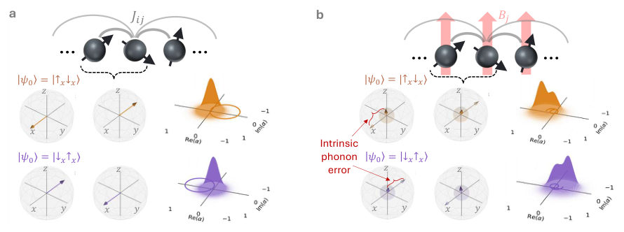
<figcaption class="paper-figure-caption"><b>Fig 1.</b> FIG. 1. Intrinsic phonon error in trapped-ion quantum simulation. Full spin-boson simulations for a minimal two-spin, one-mode system. Spin-dependent forces couple the spins to the phonon mode that mediates the Ising interaction, generating trajectories in the complex displacement plane α. a, Commuting limit (Bj = 0). For representative ˆσx-basis states (orange and purple), the spin-conditioned trajectories close at the target time, and the phonon wave packet remains localized and Gaussian. b, Noncommuting regime (Bj ̸= 0). For the same control fields, the transverse field makes the motion history dependent, generating residual spin-phonon correlations. To isolate this intrinsic...</figcaption>
</figure>
<figure class="paper-figure-card">
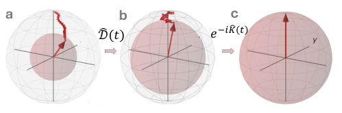
<figcaption class="paper-figure-caption"><b>Fig 2.</b> FIG. 2. Strategy for suppressing residual spin- phonon error. Schematic reduced Bloch-sphere trajectories for rapidly modulated αjk(t). a, In the drive- defined frame (Eq. 1), residual spin-phonon correlations make the reduced spin state mixed, so the Bloch vector lies inside the sphere. b, A spin-dependent displacement ˆD(t) (Eq. 3) moves to the instantaneous phonon-equilibrium frame, removing most of the phonon dressing but leaving the transverse-field-induced phonon-conditioned micromotion. c, A further kick transformation e−i ˆ K(t) (Eq. 7) removes this remaining micromotion, so the reduced spin trajectory nearly recovers the ideal slow target dynamics.</figcaption>
</figure>
<figure class="paper-figure-card">
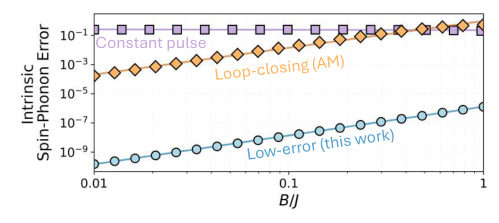
<figcaption class="paper-figure-caption"><b>Fig 3.</b> FIG. 3. Intrinsic spin-phonon error benchmark. Full spin-boson simulations for a four-ion chain with four ground- state-cooled phonon modes. The intrinsic error is obtained by removing the intended TFIM evolution, tracing out the phonons, and quantifying the resulting nonunitarity of the reduced spin channel (see [35]). Across a broad range of B, the optimized low-error waveform of this work (blue circles) suppresses the error by orders of magnitude relative to both a constant pulse (purple squares) and an amplitude-modulated pulse constrained only by loop closure, αjk(T) = 0 (orange diamonds).</figcaption>
</figure>
<figure class="paper-figure-card">
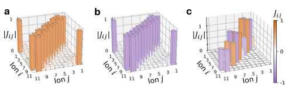
<figcaption class="paper-figure-caption"><b>Fig 4.</b> FIG. 4. Programmable interaction graphs under low-error constraints. Optimized low-error realizations of representative Ising matrices Jij in an 11-ion chain, showing that broad interaction programmability is retained under the error-suppressing constraints. Shown are long- range couplings with effective periodic boundary conditions in a linear chain (a), sign-reversed couplings enabling time-reversal protocols (b), and oscillatory quasiperiodic couplings (c). Bar height denotes |Jij|, and color denotes the sign of Jij.</figcaption>
</figure>
</div>

<p><strong>Summary.</strong> This paper tackles the critical issue of intrinsic spin-phonon errors that plague trapped-ion quantum simulators when simulating noncommuting interactions. The authors introduce a sophisticated error suppression technique based on carefully designed sequences of frame transformations and drive shaping. This method achieves orders-of-magnitude lower error rates, removing a major precision barrier for programmable quantum simulation.</p>
<p><strong>Why it may be interesting.</strong> This work directly addresses a fundamental limitation—the accumulation of intrinsic noise—in trapped-ion quantum simulation, providing concrete control protocols to enable accurate analog simulation of complex Hamiltonians previously inaccessible due to decoherence mechanisms.</p>
<details>
<summary>Detailed structure</summary>
<p><strong>Main problem.</strong> Intrinsic spin-phonon errors, generated by phonon-mediated interactions when noncommuting terms are present, severely limit the accuracy of trapped-ion quantum simulations.</p>
<p><strong>Main result.</strong> The authors developed a novel control scheme using frame transformations that suppresses these intrinsic, history-dependent errors by orders of magnitude while preserving programmable Ising couplings.</p>
<p><strong>Method.</strong> The method involves applying a sequence of unitary frame transformations (displacement and kick) to isolate the residual error dynamics and designing drive envelopes based on temporal moment constraints.</p>
<p><strong>Model / system.</strong> The system is trapped-ion quantum simulators where spin-$1/2$ degrees of freedom are coupled to collective phonon modes via a spin-boson Hamiltonian. The challenge arises when noncommuting terms (like transverse fields) are present in the effective Hamiltonian.</p>
<p><strong>Key observables.</strong> Fidelity ($F$), residual error ($\hat{\epsilon}(t)$), and the ability to realize target Ising interaction matrices ($J_{ij}$) with high precision.</p>
<p><strong>Important parameters / regimes.</strong> The simulation time $T$, the strength of noncommuting fields ($B_j 
eq 0$), and the required suppression level (orders-of-magnitude improvement).</p>
<p><strong>Assumptions / limitations.</strong> The analysis relies on the validity of the Magnus expansion in the controlled short-time regime, and the error is quantified by tracing out phonons.</p>
<p><strong>Figures summary.</strong> Figure 1 illustrates intrinsic phonon error in a minimal system. Figure 2 schematically shows the sequence of frame transformations used for error suppression. Figure 3 benchmarks the optimized waveform against constant and loop-closing controls, showing superior error reduction. Figure 4 demonstrates programmable realization of various Ising couplings.</p>
<p><strong>Paper structure.</strong> The paper first identifies the intrinsic error problem in noncommuting regimes. It then introduces a theoretical framework using frame transformations to isolate and suppress this residual error by designing specific time-dependent drive envelopes that satisfy temporal moment constraints. Finally, it validates these techniques through full spin-boson simulations.</p>
</details>
<details>
<summary>Abstract</summary>
<p>Trapped-ion quantum simulators realize programmable spin models through phonon-mediated interactions. For Hamiltonians with noncommuting terms, however, the same phonon bus generates intrinsic spin-phonon errors that strongly distort the target dynamics. Because these errors are governed by the full time history of the spin-dependent phonon motion, they survive standard loop-closing control and limit simulation accuracy. Using a sequence of frame transformations, we isolate the residual error dynamics and show that this intrinsic error can be strongly suppressed while preserving programmable Ising couplings. Full spin-boson simulations of multi-ion chains demonstrate orders-of-magnitude lower error than both constant-drive and conventional loop-closing protocols. These results remove a central precision barrier in trapped-ion analog quantum simulation and enable accurate programmable simulation of noncommuting many-body Hamiltonians and dynamical protocols.</p>
</details>
<p><sub><a href="#top">↑ back to top</a></sub></p>

<p><a id="paper-2606.15951"></a></p>
<h3 id="adiabatic-preparation-of-a-fractional-quantum-hall-fluid-by-coherently-pumping-atoms-from-a-bose-einstein-condensate"><a href="http://arxiv.org/abs/2606.15951v1">Adiabatic preparation of a fractional quantum Hall fluid by coherently pumping atoms from a Bose-Einstein condensate</a></h3>
<p><strong>Authors:</strong> Alberto Tabarelli de Fatis, Christof Weitenberg, Alexander Schnell, André Eckardt, Iacopo Carusotto<br>
<strong>Type:</strong> theory · <strong>Category:</strong> other · <strong>PDF:</strong> <a href="https://arxiv.org/pdf/2606.15951v1">https://arxiv.org/pdf/2606.15951v1</a><br>
<strong>Analysis basis:</strong> full PDF text, analyzed in chunks
<strong>Topic relevance:</strong> 🔥 <code>analog quantum simulation</code> <strong>4/5</strong> · <code>non-equilibrium dynamics</code> <strong>3/5</strong> · <code>non-equilibrium universality</code> <strong>2/5</strong> · <code>Keldysh / 2PI / non-Gaussian methods</code> <strong>1/5</strong> · <code>correlated / nonlocal dissipation</code> <strong>1/5</strong> · <code>driven-dissipative phase transition</code> <strong>1/5</strong> · <code>entanglement &amp; information structure</code> <strong>1/5</strong> · <code>exotic spin models in light-matter</code> <strong>1/5</strong> · <code>methods for driven-dissipative</code> <strong>1/5</strong></p>
<div class="figure-strip-hint">↔ Scroll figures horizontally</div>
<div class="paper-figures-scroll">
<figure class="paper-figure-card">
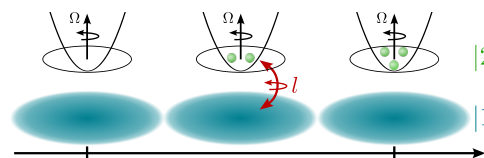
<figcaption class="paper-figure-caption"><b>Fig 1.</b> FIG. 1. Proposed scheme for the generation of an FQH fluid of ultracold atoms. The FQH system under study is formed of atoms in a strongly interacting state |2⟩close to a Fesh- bach resonance (see End Matter), tightly trapped in a two- dimensional geometry; in the frame rotating at frequency Ω, the atoms experience an effective synthetic magnetic field. This FQH system is coherently coupled via two Raman beams with a Laguerre-Gauss profile to a weakly interacting conden- sate |1⟩that acts as a particle reservoir, exchanging an angular momentum l per particle. The FQH is initially empty, and is adiabatically pumped to the desired state in a time T.</figcaption>
</figure>
<figure class="paper-figure-card">
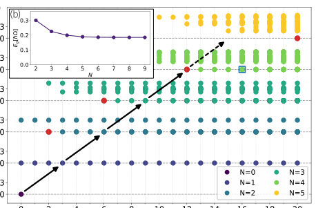
<figcaption class="paper-figure-caption"><b>Fig 2.</b> FIG. 2. (a) Many-body spectrum of the system in the LLL manifold as a function of the total angular momentum, in the case of no external potential in the rotating frame. Different colors refer to different number sectors. Red dots denote the Laughlin states, of angular momentum L = N(N−1), and the blue square is the state with one quasi-hole and N = 4. The arrows indicate the transitions coupling the vacuum to the N = 4 Laughlin state, using a pump with angular momentum l = 3. Transitions to larger N are suppressed by the many- body gap. (b) Many-body gap above the Laughlin state as a function of N for g/l2 B = 3.77ℏΩ.</figcaption>
</figure>
<figure class="paper-figure-card">
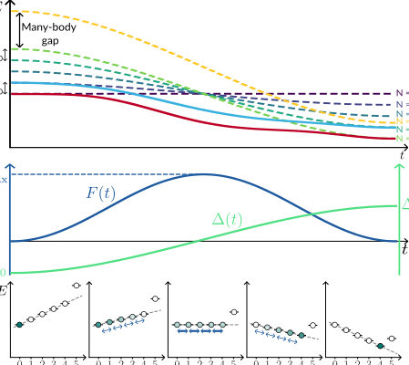
<figcaption class="paper-figure-caption"><b>Fig 3.</b> FIG. 3. (a) Instantaneous eigenstates during the adiabatic evolution with F = 0 (dashed lines) and first two eigenstates for F(t) ̸= 0 (solid lines). (b) Sketch of the temporal ramp of the pump strength F(t) and the detuning ∆(t). (c) Illustra- tion of the adiabatic scheme as the tunneling in a tilted lattice comprising the states coupled by the pump F: initially, the system is in the N = 0 vacuum state; at the end, it is frozen in the Nt = 4 Laughlin state protected by the many-body gap (blue dot).</figcaption>
</figure>
<figure class="paper-figure-card">
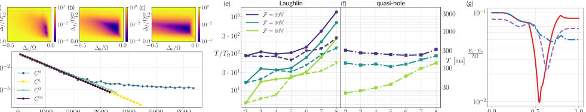
<figcaption class="paper-figure-caption"><b>Fig 4.</b> FIG. 4. Infidelity with Nt = 4 Laughlin state for different initial and final detuning, for a C∞ramp of ramp time T = 127TΩ (318 ms), for (a) Fmax/Ω= 0.05, (b) 0.1, (c) 0.2. The dashed line marks the many-body gap. (d) Infidelity with the Nt = 7 Laughlin state for ramps with different smoothness, as a function of time, rescaled by the sharpness of ∆(s = t/T). (e) Ramp time T required to reach a desired fidelity as a function of Nt, for a C0 ramp with ∆f = −∆0 = 0.1Ωand Fmax = 0.1Ω. The solid lines refer to a purely harmonic potential, whereas dashed lines include a quartic potential with V0 = 0.001ℏΩ. The detunings include the energy shift due to the quartic potential. (f) Same plot for...</figcaption>
</figure>
<figure class="paper-figure-card">
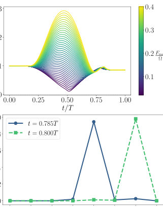
<figcaption class="paper-figure-caption"><b>Fig 5.</b> FIG. 5. (a) Instantaneous gap for Nt = 5, for a C∞ramp with initial detuning ∆0 = −0.1Ω, final detuning ∆f = 0.1Ω, for different values of Fmax ∈[0.02, 0.4]Ω. Around t = 0.8T, the first excited state goes through a level crossing, with its occupation (b) going from the Nt −1 to the Nt + 1 sector.</figcaption>
</figure>
</div>

<p><strong>Summary.</strong> The paper proposes an advanced adiabatic protocol to create fractional quantum Hall fluids using bosonic atoms coupled to a BEC reservoir. By coherently pumping atoms while carefully controlling external parameters, the method avoids crossing detrimental topological phase transitions. This offers a robust and scalable pathway for generating highly correlated quantum matter states in cold atom experiments.</p>
<p><strong>Why it may be interesting.</strong> This work provides a detailed theoretical roadmap for realizing exotic topological quantum states (FQH) using highly controllable ultracold atomic platforms, directly addressing challenges in adiabatic state preparation.</p>
<details>
<summary>Detailed structure</summary>
<p><strong>Main problem.</strong> The primary goal is to develop an adiabatic protocol for preparing a many-particle fractional quantum Hall (FQH) fluid using bosonic ultracold atoms.</p>
<p><strong>Main result.</strong> The proposed one-shot adiabatic ramping scheme successfully generates the target Laughlin state with high fidelity by avoiding topological phase transitions, outperforming sequential ramp methods.</p>
<p><strong>Method.</strong> The protocol involves adiabatically varying external pump parameters ($\Delta(t)$ and $F(t)$) to coherently transfer atoms from a Bose-Einstein condensate reservoir into the FQH system while maintaining an open adiabatic gap.</p>
<p><strong>Model / system.</strong> The system consists of bosonic ultracold atoms in two states: one forming the FQH fluid (in the Lowest Landau Level, LLL) and the other acting as a BEC reservoir. The dynamics are governed by a time-dependent Hamiltonian incorporating coupling terms ($\hat{H}_P(t)$).</p>
<p><strong>Key observables.</strong> Fidelity ($1-F$), adiabatic gap size, occupation of particle number sectors ($N$).</p>
<p><strong>Important parameters / regimes.</strong> The magnetic length ($l_B$), the ratio of BEC sound velocity to FQH atom speed ($c_{	ext{BEC}} / v_{	ext{FQH}}$), and the maximum pump strength ($F_{max}$).</p>
<p><strong>Assumptions / limitations.</strong> The LLL approximation is used, and in later analyses, phonon emission from FQH atoms into the BEC must be suppressed.</p>
<p><strong>Figures summary.</strong> Figures illustrate the coupling scheme (Fig. 1), the many-body spectrum showing Laughlin states (Fig. 2a), the adiabatic evolution path (Fig. 3), and comparisons of fidelity between one-shot vs. sequential ramps (Fig. 7).</p>
<p><strong>Paper structure.</strong> The paper introduces the physical model, details the Hamiltonian in the LLL manifold, proposes the adiabatic pumping protocol by controlling time-dependent parameters ($\Delta(t)$, $F(t)$), and numerically assesses the fidelity and gap protection across various ramp profiles.</p>
</details>
<details>
<summary>Abstract</summary>
<p>We propose a protocol to adiabatically prepare a many-particle fractional quantum Hall fluid of bosonic ultracold atoms exploiting a time-dependent coherent coupling of a strongly interacting atomic state with a large dilute Bose-Einstein condensate. Starting from an empty cloud, atoms with well-defined angular momentum are coherently pumped into the fluid by Raman beams with a Laguerre-Gauss profile. Compared to number-conserving schemes which rely on finite-size-induced topological gaps, we identify an adiabatic path in the Fock space which avoids crossing topological phase transitions and thus maintains a sizable adiabatic gap open at all times. The efficiency of our preparation protocol is numerically assessed for typical experimental parameters up to particle numbers that largely exceed the experimental state-of-the-art. The crucial advantage of including an anharmonic confinement is finally highlighted.</p>
</details>
<p><sub><a href="#top">↑ back to top</a></sub></p>

<p><a id="paper-2606.16848"></a></p>
<h3 id="exact-solution-of-the-glauber-ising-model-on-the-finite-length-semi-open-chain"><a href="http://arxiv.org/abs/2606.16848v1">Exact solution of the Glauber-Ising model on the finite-length semi-open chain</a></h3>
<p><strong>Authors:</strong> Malte Henkel<br>
<strong>Type:</strong> theory · <strong>Category:</strong> statistical mechanics · <strong>PDF:</strong> <a href="https://arxiv.org/pdf/2606.16848v1">https://arxiv.org/pdf/2606.16848v1</a><br>
<strong>Analysis basis:</strong> full PDF text, analyzed in chunks
<strong>Topic relevance:</strong> 🔥 <code>non-equilibrium dynamics</code> <strong>4/5</strong> · <code>methods for driven-dissipative</code> <strong>3/5</strong> · <code>non-equilibrium universality</code> <strong>3/5</strong> · <code>driven-dissipative phase transition</code> <strong>2/5</strong> · <code>Frenkel-Kontorova</code> <strong>1/5</strong> · <code>Keldysh / 2PI / non-Gaussian methods</code> <strong>1/5</strong> · <code>correlated / nonlocal dissipation</code> <strong>1/5</strong></p>
<div class="figure-strip-hint">↔ Scroll figures horizontally</div>
<div class="paper-figures-scroll">
<figure class="paper-figure-card">

<figcaption class="paper-figure-caption"><b>Fig 1.</b> Figure 1: Semi-open segment with N sites. At the left, an Ising spin is kept fixed and the time- dependent correlator Cn(t) with another spin at site 0 &lt; n &lt; N is studied. The constraints C0(t) = 1 and CN(t) = 0 are applied.</figcaption>
</figure>
<figure class="paper-figure-card">
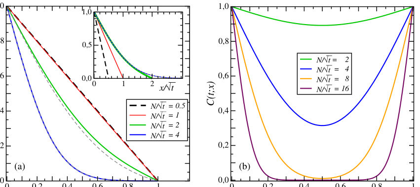
<figcaption class="paper-figure-caption"><b>Fig 2.</b> Figure 2: Finite-size scaling in the 1D Glauber-Ising model at T = 0 on a finite chain for (a) semi- open and (b) periodic boundary conditions. The main plots display the dependence of the correlation function C(t; x) on the finite-size scaling variable x/N, for several fixed values of N/ √</figcaption>
</figure>
<figure class="paper-figure-card">
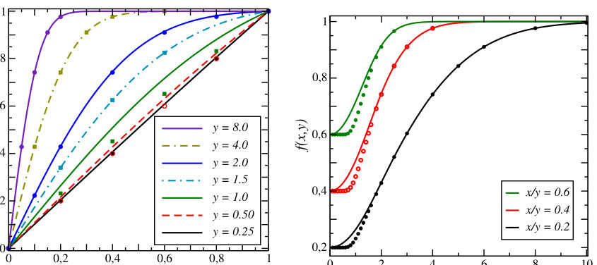
<figcaption class="paper-figure-caption"><b>Fig 3.</b> Figure 3: Test of the identity (2.17), conjectured from the correlation scaling function of the finite-size semi-open 1D Glauber-Ising model. Full curves come from the simplified scaling expression derived from Cscal. Points are derived from the exact solution Csemi. The left panel shows the dependence on x/y for several values of y. The right panel shows the dependence on y, for several vales of x/y.</figcaption>
</figure>
</div>

<p><strong>Summary.</strong> This paper derives the exact time-space correlation function for the 1D Glauber-Ising model on a semi-open chain at zero temperature. By solving the governing diffusion equation with appropriate boundary conditions, it establishes finite-size scaling functions that connect the magnetic dynamics to the empty-interval probability of a dual coagulation-diffusion process.</p>
<p><strong>Why it may be interesting.</strong> This work provides an exact analytical treatment of finite-size effects in non-equilibrium dynamics, which is crucial for understanding crossover phenomena in many physical systems modeled by interacting particles or spin chains.</p>
<details>
<summary>Detailed structure</summary>
<p><strong>Main problem.</strong> The primary goal is obtaining the exact time-space correlation function for the 1D Glauber-Ising model on a finite semi-open chain, which also allows deducing properties of the dual coagulation-diffusion process.</p>
<p><strong>Main result.</strong> The authors derive explicit finite-size scaling functions for both periodic and semi-open chains, establishing a correspondence between the correlation function and the empty-interval probability for the dual process.</p>
<p><strong>Method.</strong> The analysis involves solving the equation of motion (a diffusion equation) governing the correlators using Fourier series representations and applying boundary conditions specific to the semi-open geometry.</p>
<p><strong>Model / system.</strong> The system is the 1D Glauber-Ising model, defined on a finite chain segment with spin variables $\sigma_n = \pm 1$. The dynamics are non-equilibrium (Glauber rule) and studied at zero temperature ($T=0$).</p>
<p><strong>Key observables.</strong> Time-space correlation function $C(t; r)$, single-time correlator $C_n(t)$, empty-interval probability $E(t, x)$, and particle concentration decay $c(t)$.</p>
<p><strong>Important parameters / regimes.</strong> Finite size $N$, time $t$, and the ratio of length scale to system size ($N/\sqrt{t}$). The analysis focuses on the $T=0$ limit.</p>
<p><strong>Assumptions / limitations.</strong> The derivation relies on extending known results for periodic chains to semi-open boundaries, and approximations are noted when simple scaling ansatze fail near crossover regimes.</p>
<p><strong>Figures summary.</strong> Figure 1 illustrates the setup for the semi-open chain calculation. Figure 2 compares the exact semi-open correlator against a simplified scaling ansatz. Figure 3 tests a conjectured mathematical identity relating these two forms.</p>
<p><strong>Paper structure.</strong> The paper first reviews results for the periodic ring case, then focuses on extending the methods to the semi-open chain geometry. Finally, it relates these findings to the dual coagulation-diffusion process and derives expressions for particle concentration $c(t)$ using mathematical identities involving theta functions.</p>
</details>
<details>
<summary>Abstract</summary>
<p>The exact time-space correlation function of the $1D$ Glauber-Ising model, quenched to temperature $T=0$ and on a semi-open lattice of finite size $N$, is obtained. This also allows to deduce the exact empty-interval probability of the dual $1D$ coagulation-diffusion process on a periodic finite ring and to reproduce the long-time decay of the particle concentration. These results are consistent with the generic expectations of dynamical finite-size scaling theory.</p>
</details>
<p><sub><a href="#top">↑ back to top</a></sub></p>

<p><a id="paper-2606.15009"></a></p>
<h3 id="on-demand-coherent-mapping-of-telecom-optical-states-onto-erbium-hyperfine-spins"><a href="http://arxiv.org/abs/2606.15009v1">On-Demand Coherent Mapping of Telecom Optical States onto Erbium Hyperfine Spins</a></h3>
<p><strong>Authors:</strong> Zongfeng Li, Mahdi Hosseini<br>
<strong>Type:</strong> experiment · <strong>Category:</strong> quantum information and computing · <strong>PDF:</strong> <a href="https://arxiv.org/pdf/2606.15009v1">https://arxiv.org/pdf/2606.15009v1</a><br>
<strong>Analysis basis:</strong> full PDF text, analyzed in chunks
<strong>Topic relevance:</strong> 🔥 <code>QC/QI experiment</code> <strong>4/5</strong> · <code>exotic spin models in light-matter</code> <strong>3/5</strong> · <code>quantum optics experiment</code> <strong>3/5</strong> · <code>spintronics-quantum-optics interface</code> <strong>3/5</strong> · <code>interference shaping light</code> <strong>1/5</strong> · <code>quantum measurements</code> <strong>1/5</strong></p>
<div class="figure-strip-hint">↔ Scroll figures horizontally</div>
<div class="paper-figures-scroll">
<figure class="paper-figure-card">
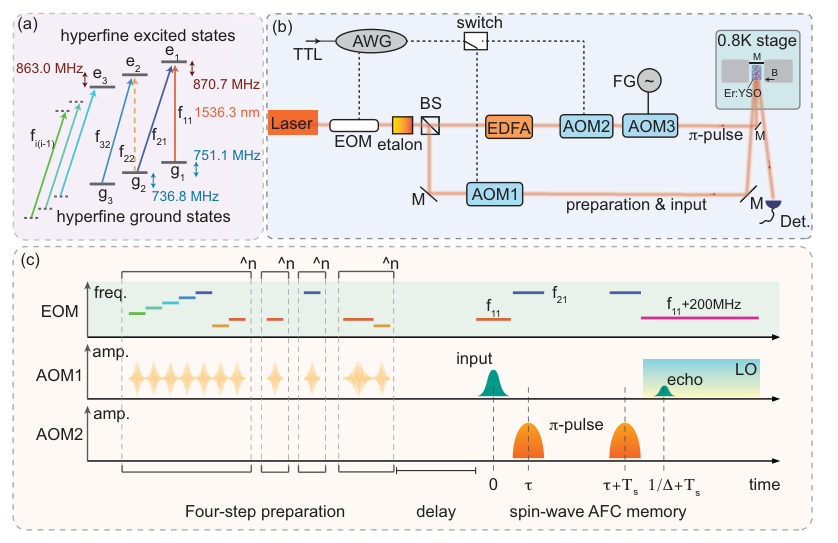
<figcaption class="paper-figure-caption"><b>Fig 1.</b> FIG. 1. (a) Schematic of the hyperfine energy levels of Er3+:YSO (site 1) at B = 1.1 T showing ground (gi) and excited (ei) manifolds. The AFC and π-pulse is applied at transition g1 ↔e1 and g2 ↔e1, respectively. (b) and (c) Schematic of the experimental setup and the pulse sequence. The probe and the control-pulse optical beams enter the crystal in a cryostat at a relative angle θ ≈20 mrad to allow spatial filtering of the echo. An Electro-optic modulator (EOM) and an etalon filter are used for tuning and filtering the laser frequency to address fij transitions. The control (π) pulses are generated by amplifying a fraction of the probe laser in an Er-doped fiber amplifier (EDFA), followed by...</figcaption>
</figure>
<figure class="paper-figure-card">
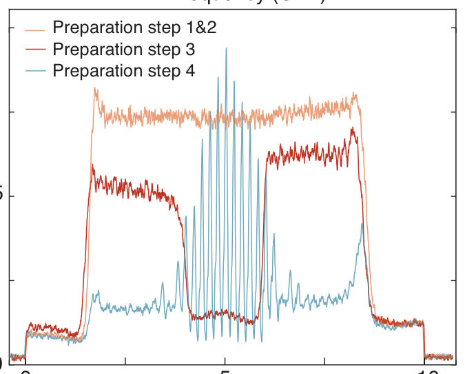
<figcaption class="paper-figure-caption"><b>Fig 2.</b> FIG. 2. (a) In the hole-burning curves (top and bottom), antihole(peak) structures appear when pumping at the right edge of the 4I15/2 →4 I15/2 absorption line (middle). The antiholes’ frequencies determine the Λ system and the hyperfine structure. (b) Result of the four-step preparation used for effective initialization of an atomic frequency comb (AFC) into g1 state. Steps 1 and 2: a 7-MHz-wide class cleaning and initialization in g2 state. Step 3: 2-MHz-wide population is burned from g2 to g1. Step 4: a 2-MHz-AFC is burned at g1 state meanwhile cleaning g2 level. The g1 population is characterized by the transition f11.</figcaption>
</figure>
<figure class="paper-figure-card">
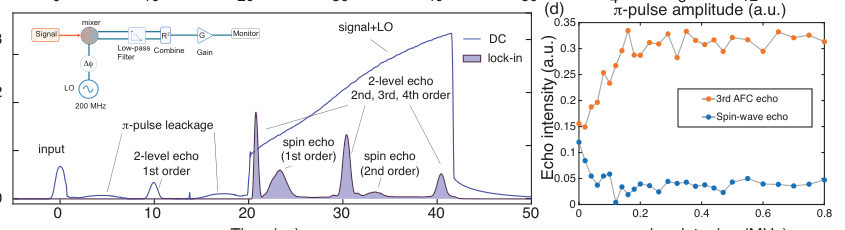
<figcaption class="paper-figure-caption"><b>Fig 3.</b> FIG. 3. (a) Typical 2-level (without π-pulses) and spin-wave storage data are shown as measured with a photo-detector (DC), with TAF C = 10 µs, Ts = 5 µs. Inset shows the amplified spin-wave echo. (b) Spin-wave storage data is shown for both DC and lock-in detection, with TAF C = 10 µs, Ts = 13 µs. A local oscillator (200 MHz detunned) co-propagates with the probe pulses during 20-42µs time frame. Inset shows the lock-in detection setup.(c) Measured echo amplitude as a function of the control π pulse duration and strength. Solid lines are linear fits. (d) Intensities of the spin-wave echo and the 3rd AFC 2-level echo measured for different control-pulse detunings from the excited state.</figcaption>
</figure>
<figure class="paper-figure-card">
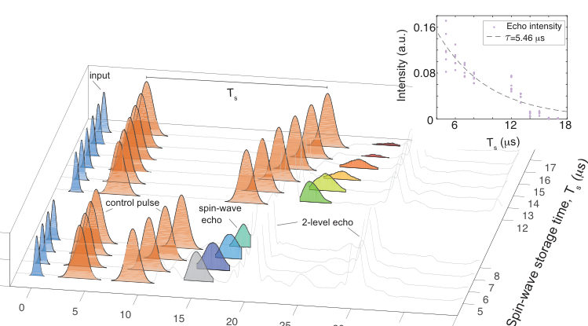
<figcaption class="paper-figure-caption"><b>Fig 4.</b> FIG. 4. Spin-wave echo intensity measured using lock-in detection as a function of storage time Ts = 5, ..., 8 µs and 12, ..., 15 µs.The signal decays with 1/e time T ∗ 2 = 5.46 µs. The input and control pulses are shown schematically and do not represent the actual experimental pulses. Inset shows the raw memory output for different experiment runs taken at different spin-wave storage times, Ts (varying the control pulse separation).</figcaption>
</figure>
</div>

<p><strong>Summary.</strong> The paper reports the successful demonstration of on-demand spin-wave storage in $ ext{Er}^{3+}:   ext{Y}_2    ext{SiO}_5$ crystals using optical control pulses. This technique achieves coherent mapping of telecom photons onto long-lived hyperfine spins, establishing a key component for quantum repeaters. While current limitations stem from inhomogeneous broadening, the results define a clear path toward multi-second storage times.</p>
<p><strong>Why it may be interesting.</strong> This work directly addresses a major technological bottleneck in quantum networking by providing a solid-state memory operating at telecom wavelengths, which is highly relevant for building practical quantum repeaters.</p>
<details>
<summary>Detailed structure</summary>
<p><strong>Main problem.</strong> The core challenge is achieving on-demand, coherent mapping of telecom optical quantum states onto long-lived ground-state spins within solid-state systems for use in quantum networks.</p>
<p><strong>Main result.</strong> The authors successfully demonstrated spin-wave storage in Er-doped crystals, establishing a crucial operational primitive for building scalable, fiber-compatible quantum repeater nodes at telecom wavelengths.</p>
<p><strong>Method.</strong> They utilized complex optical control pulses and heterodyne detection to coherently transfer excitations into the hyperfine ground states of $  ext{Er}^{3+}$ ions via an effective $\Lambda$-system.</p>
<p><strong>Model / system.</strong> The physical platform is $  ext{Er}^{3+}:   ext{Y}_2    ext{SiO}_5$ operated at cryogenic temperatures and magnetic fields. The mechanism relies on spin-wave storage within the hyperfine ground states, which allows coherence times limited by the long hyperfine $T_2$.</p>
<p><strong>Key observables.</strong> Hyperfine population lifetime (up to 25 s), spin-wave storage time ($\sim 25 \mu	ext{s}$), and optical-to-spin transfer efficiency ($>12\%$).</p>
<p><strong>Important parameters / regimes.</strong> The dominant limitation is the hyperfine inhomogeneous broadening, which restricts current storage times; future improvements require spectral tailoring and dynamical decoupling.</p>
<p><strong>Assumptions / limitations.</strong> The measurements are performed in a linear storage regime where Maxwell-Bloch evolution is independent of excitation photon number.</p>
<p><strong>Figures summary.</strong> Figures illustrate hole-burning spectroscopy characterizing the $\Lambda$ system, comparing two-level vs. spin-wave echo decay curves, and showing dependence on pulse parameters like detuning and amplitude.</p>
<p><strong>Paper structure.</strong> The paper progresses by first establishing the necessity of this primitive for quantum networks, detailing the experimental setup using multi-step pumping to create an AFC, demonstrating the storage capability, and finally analyzing limitations (inhomogeneous broadening) to propose pathways for achieving second-scale coherence.</p>
</details>
<details>
<summary>Abstract</summary>
<p>Optical quantum memories operating directly at telecom wavelengths are a key enabling technology for long-distance quantum networks, yet on-demand storage onto long-lived ground-state spins in this spectral region has remained elusive due to the challenge of coherently transferring optical excitations to hyperfine spin states. Here we demonstrate spin-wave storage in $^{167}$Er$^{3+}$:Y$_2$SiO$_5$ at 0.8 K and 1.1 T, establishing the core operational primitive required for on-demand telecom quantum memories. Using classical optical control pulses, we coherently transfer collective optical excitations to erbium hyperfine states with transfer efficiency exceeding 12%, enabling on-demand retrieval. We measure a hyperfine population lifetime of 25 s and demonstrate spin-wave storage for up to 25 $μ$s. By identifying hyperfine inhomogeneous broadening as the dominant present limitation, our measurements define a clear pathway toward second-scale storage through improved spectral tailoring and dynamical decoupling. The results highlight the application of erbium-based solid-state memories for scalable fiber-compatible quantum repeater architectures.</p>
</details>
<p><sub><a href="#top">↑ back to top</a></sub></p>

<p><a id="paper-2606.15928"></a></p>
<h3 id="quantum-information-geometry-of-multicomponent-superconducting-fluctuation-transport"><a href="http://arxiv.org/abs/2606.15928v1">Quantum Information Geometry of Multicomponent Superconducting Fluctuation Transport</a></h3>
<p><strong>Authors:</strong> Zi-Ting Sun, Ying-Ming Xie, Naoto Nagaosa<br>
<strong>Type:</strong> theory · <strong>Category:</strong> other · <strong>PDF:</strong> <a href="https://arxiv.org/pdf/2606.15928v1">https://arxiv.org/pdf/2606.15928v1</a><br>
<strong>Analysis basis:</strong> full PDF text, analyzed in chunks
<strong>Topic relevance:</strong> 🔥 <code>entanglement &amp; information structure</code> <strong>4/5</strong> · <code>Keldysh / 2PI / non-Gaussian methods</code> <strong>3/5</strong> · <code>correlated / nonlocal dissipation</code> <strong>2/5</strong> · <code>driven-dissipative phase transition</code> <strong>2/5</strong> · <code>non-equilibrium dynamics</code> <strong>2/5</strong> · <code>methods for driven-dissipative</code> <strong>1/5</strong> · <code>non-equilibrium universality</code> <strong>1/5</strong></p>
<div class="figure-strip-hint">↔ Scroll figures horizontally</div>
<div class="paper-figures-scroll">
<figure class="paper-figure-card">
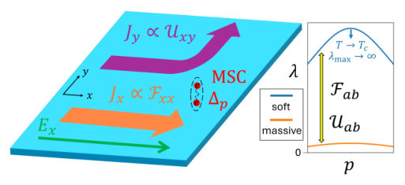
<figcaption class="paper-figure-caption"><b>Fig 1.</b> FIG. 1. Schematic illustration of superconductor fluctuation transport as a probe of quantum information geometry. Left panel: An applied electric field Ex drives fluctuating Cooper pairs ∆p of a multicomponent superconductor (MSC) in momentum space. The longitudinal paraconductivity is governed by the quan- tum Fisher information, giving Jx ∝Fxx, while the transverse anomalous Hall paraconductivity is governed by the mean Uhlmann curvature, giving Jy ∝Uxy. The right panel shows the spectrum of the pair-propagator eigenvalues λ: upon approaching the super- conducting transition, T →Tc, the softest fluctuation mode di- verges, λmax →∞, whereas the massive mode remains finite. The mixed-state...</figcaption>
</figure>
<figure class="paper-figure-card">
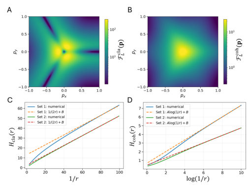
<figcaption class="paper-figure-caption"><b>Fig 2.</b> FIG. 2. Numerical results for longitudinal paraconductivity. (A) and (B): Distribution of F cla L (p) and F coh L (p) for Eq. (24). In both panels, the parameters are chosen as ℓ2 = 0.8, g2 = 0.5, γ0 = |δa| = 1, and r = 0.03. (C) Dimensionless integral Hcla(r) as a function of 1/r for two parameter sets: (1) with ℓ2 = 0.8 and g2 = 0.5, and (2) with ℓ2 = 0.6 and g2 = 0.4. The dashed curves show the leading critical form A(1/r)+B, confirming the A-L divergence of the spectral contribution. (D) Dimensionless integral Hcoh(r) as a function of log(1/r) for the same two parameter sets. The dashed curves show the leading form A log(1/r)+B, demonstrating that the coherent contribution has only a...</figcaption>
</figure>
<figure class="paper-figure-card">
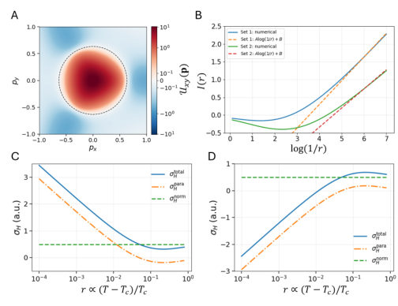
<figcaption class="paper-figure-caption"><b>Fig 3.</b> FIG. 3. Results for fluctuational anomalous Hall effects. (A) Momentum-resolved MUC Uxy(p) for Eq. (24). The parameters are chosen as ℓ2 = 0.8, g2 = 0.5, γ0 = |δa| = 1, and r = 0.03. The dashed circle marks the zero of the numerator, across which Uxy changes sign. (B) Dimensionless integral I(r) as a function of log(1/r) for two parameter sets: (1) ℓ2 = 0.8 and g2 = 0.5, (2) ℓ2 = 0.7 and g2 = 0.6. The agreement at large log(1/r) con- firms the critical behavior of I(r). Panel (C) corresponds to a local- attraction scenario with a positive σnorm H background, while panel (D) corresponds to a Coulomb-repulsion scenario. In both cases, the fluctuational anomalous Hall conductivity σpara H...</figcaption>
</figure>
</div>

<p><strong>Summary.</strong> The paper establishes that collective superconducting fluctuations act as a unique probe of mixed-state quantum information geometry. By analyzing the paraconductivity components—specifically relating longitudinal conductivity to Quantum Fisher Information and anomalous Hall effect to mean Uhlmann Curvature—the authors demonstrate a deep geometric connection previously unseen in normal metals. This provides a powerful theoretical framework for understanding fluctuation transport near superconducting transitions.</p>
<p><strong>Why it may be interesting.</strong> This work bridges fundamental concepts from quantum information theory (mixed-state geometry) directly into measurable condensed matter transport phenomena, providing a novel diagnostic tool for strongly correlated superconducting states.</p>
<details>
<summary>Detailed structure</summary>
<p><strong>Main problem.</strong> To determine if collective many-body superconducting fluctuations possess a measurable quantum geometry and how this geometry manifests in transport properties.</p>
<p><strong>Main result.</strong> Superconducting fluctuation transport provides a direct, experimentally accessible probe of mixed-state quantum information geometry via the relationship between paraconductivity components and geometric tensors like the Quantum Fisher Information and mean Uhlmann Curvature.</p>
<p><strong>Method.</strong> The analysis uses time-dependent Ginzburg-Landau theory in the Gaussian fluctuation regime to derive kinetic equations for the pairing fluctuation density matrix, linking transport coefficients to quantum information metrics.</p>
<p><strong>Model / system.</strong> The system is a multicomponent superconductor exhibiting fluctuations above the critical temperature ($T > T_c$), modeled using a time-dependent Ginzburg-Landau (TDGL) theory. The core object of study is the equilibrium density matrix of fluctuating Cooper pairs, which defines a mixed-state manifold.</p>
<p><strong>Key observables.</strong> Longitudinal paraconductivity ($\sigma_{L}$), fluctuational anomalous Hall conductivity ($\sigma_{	ext{para}}^H$), Quantum Fisher Information (QFI), and mean Uhlmann Curvature (MUC).</p>
<p><strong>Important parameters / regimes.</strong> Temperature relative to $T_c$ ($r \propto (T - T_c)/T_c$), fluctuation parameters ($\gamma_\pm, \lambda$), and the ratio of kinetic coefficients ($\Xi''/\Xi'$).</p>
<p><strong>Assumptions / limitations.</strong> The analysis is performed in the Gaussian fluctuation regime, utilizing low-frequency/long-wavelength approximations for the inverse propagator, and assuming a specific relaxation structure for the kinetic coefficient.</p>
<p><strong>Figures summary.</strong> Figures illustrate how longitudinal paraconductivity relates to QFI ($J_x \propto F_{xx}$) and anomalous Hall conductivity relates to MUC ($J_y \propto U_{xy}$), showing characteristic divergences near $T_c$.</p>
<p><strong>Paper structure.</strong> The paper progresses from establishing the link between quantum geometry and transport in general (Chunk 1) to deriving the kinetic equation for the pairing fluctuation density matrix (Chunk 2, Chunk 5). It then analyzes critical asymptotics by examining the soft branch of the inverse propagator (Chunk 6), culminating in specific applications to chiral superconductors (Chunk 3).</p>
</details>
<details>
<summary>Abstract</summary>
<p>Quantum geometry underlies many electronic responses, but its transport signatures have so far been established mainly for pure single-particle Bloch states. Whether collective many-body fluctuations possess a measurable quantum geometry remains largely unexplored. Here we show that superconducting fluctuation transport provides a direct probe of quantum information geometry in collective many-body matter. Starting from a multicomponent time-dependent Ginzburg-Landau theory in the Gaussian fluctuation regime, we identify the equilibrium density matrix of fluctuating Cooper pairs as the static pair propagator, which defines a positive mixed-state manifold in momentum space. The geometry of this manifold is directly measurable through paraconductivity: the longitudinal paraconductivity is governed by the quantum Fisher information of superconducting fluctuation modes, while the fluctuational anomalous Hall effect is governed by the mean Uhlmann curvature, the mixed-state counterpart of Berry curvature. This correspondence further yields geometric bounds between these two transport components, with no direct analogue in normal electronic transport. Applied to chiral superconducting fluctuations in quarter-metal systems motivated by rhombohedral multilayer graphene, a symmetry-allowed Lifshitz invariant generates finite mean Uhlmann curvature and logarithmically enhances the anomalous Hall conductivity above the critical temperature. Our results establish collective superconducting fluctuations as an experimentally accessible transport probe of mixed-state quantum information geometry.</p>
</details>
<p><sub><a href="#top">↑ back to top</a></sub></p>

<p><a id="paper-2606.14847"></a></p>
<h3 id="high-fidelity-two-qubit-gates-in-a-7-qubit-register-for-quantum-networks"><a href="http://arxiv.org/abs/2606.14847v1">High-fidelity two-qubit gates in a 7-qubit register for quantum networks</a></h3>
<p><strong>Authors:</strong> Margriet van Riggelen, Jiwon Yun, H. Benjamin van Ommen, Tim H. Taminiau<br>
<strong>Type:</strong> both · <strong>Category:</strong> quantum information and computing · <strong>PDF:</strong> <a href="https://arxiv.org/pdf/2606.14847v1">https://arxiv.org/pdf/2606.14847v1</a><br>
<strong>Analysis basis:</strong> full PDF text, analyzed in chunks
<strong>Topic relevance:</strong> 🔥 <code>QC/QI experiment</code> <strong>4/5</strong> · <code>spintronics-quantum-optics interface</code> <strong>3/5</strong> · <code>analog quantum simulation</code> <strong>2/5</strong> · <code>quantum measurements</code> <strong>2/5</strong> · <code>entanglement &amp; information structure</code> <strong>1/5</strong> · <code>exotic spin models in light-matter</code> <strong>1/5</strong> · <code>non-equilibrium dynamics</code> <strong>1/5</strong></p>
<div class="figure-strip-hint">↔ Scroll figures horizontally</div>
<div class="paper-figures-scroll">
<figure class="paper-figure-card">
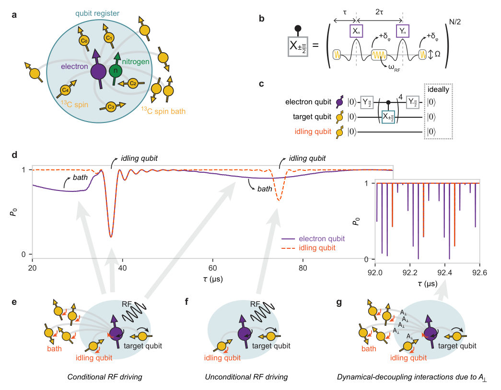
<figcaption class="paper-figure-caption"><b>Fig 1.</b> FIG. 1. Crosstalk in a multi-qubit electron-nuclear spin system. a) The 7-qubit register formed by the NV electron spin, the NV 14N nuclear spin and 5 13C nuclear spins. Other spins in the 13C spin bath are not part of the register, but do cause decoherence of the register spins. b) Dynamically decoupled radiofrequency gates are used to engineer a two-qubit gate between the electron spin, and one target nuclear spin. The relevant gate parameters are τ, ωRF, Ω, N, and δϕ. c) Quantum circuit to reveal the different types of crosstalk. The interpulse delay τ is varied while keeping the total rotation angle constant. After the circuit, all qubits should end in |0⟩. d) Simulated outcome of the...</figcaption>
</figure>
<figure class="paper-figure-card">
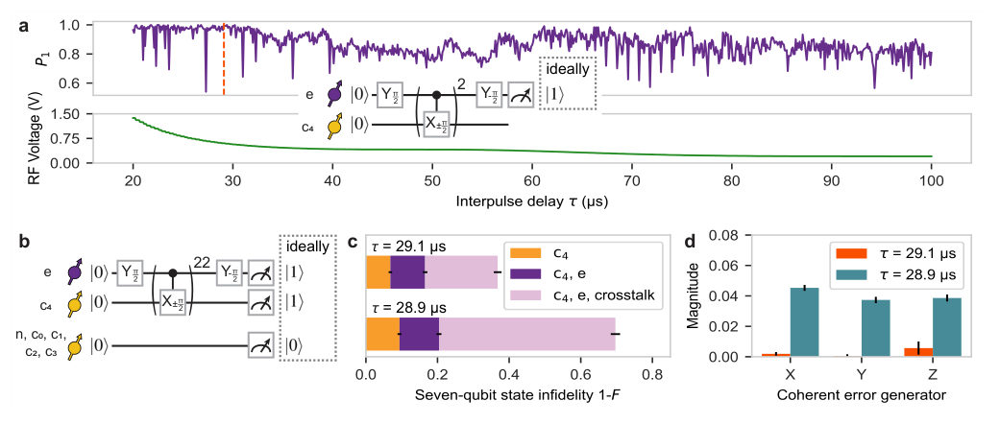
<figcaption class="paper-figure-caption"><b>Fig 2.</b> FIG. 2. Measurements for the crosstalk during the e-c4 two-qubit gate. a) Upper panel: electron-spin qubit population in |1⟩ after application of the circuit in the inset. Various regions and resonances where the coherence is reduced are observed. The red dotted line corresponds to τ = 29.1 µs, the value we find for this gate at the end of the optimization procedure. Lower panel: RF voltage used to keep the gate rotation angle constant while sweeping τ. b) Experimental circuit to amplify errors and detect crosstalk. Using the readout of all qubits, we compute the state infidelity after application of the circuit. c) State infidelity after application of the circuit in b). The orange bar...</figcaption>
</figure>
<figure class="paper-figure-card">
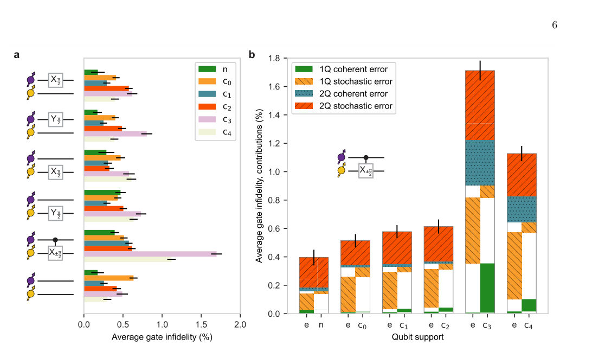
<figcaption class="paper-figure-caption"><b>Fig 3.</b> FIG. 3. Characterization of the optimized gates a) Average gate infidelity for the gates in our gate set. Data is obtained from six two-qubit gate set tomography (GST) experiments, each involving the electron-spin qubit (purple) and one nuclear-spin qubit (yellow). Error bars represent one standard deviation. b) We can separate different contributions to the average gate infidelity, here the two-qubit gates are shown as an example. Every column represents one two-qubit gate. Green and yellow half-bars indicate single-qubit errors on the electron-spin qubit (left) and nuclear-spin qubit (right), respectively. Teal and red full-width bars indicate errors on both qubits.</figcaption>
</figure>
<figure class="paper-figure-card">
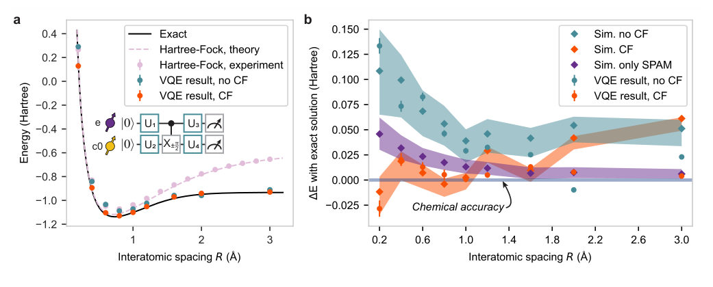
<figcaption class="paper-figure-caption"><b>Fig 4.</b> FIG. 4. VQE for H2 a) Ground state energy of H2 for varied interatomic spacing R. Pink dots indicate the energy when constructing a HF state with the circuit, which can be compared to the theoretical HF energy value (pink dotted line). Teal (orange) dots indicate experimental VQE results without (with) clifford fitting (CF). The exact value is shown for comparison. Inset: two-qubit quantum circuit to calculate the H2 ground state. b) Difference with the exact ground-state energy. Dots are the experimental VQE data, diamonds indicate the result of simulations based on two-qubit GST results. Shaded region is a 2σ confidence region around the simulated values based on a Monte-Carlo simulation...</figcaption>
</figure>
<figure class="paper-figure-card">
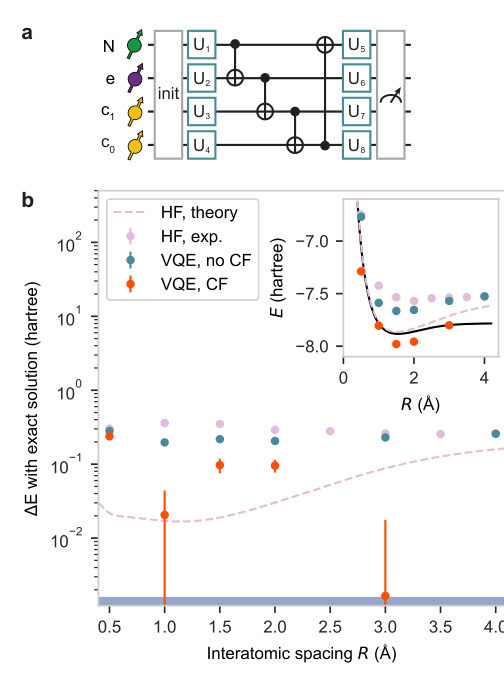
<figcaption class="paper-figure-caption"><b>Fig 5.</b> FIG. 5. VQE for LiH a) Quantum circuit for LiH VQE. b) Difference with the exact ground-state energy of LiH for varied interatomic spacing R. Pink dots are an experimen- tally obtained ground-state energy estimate by constructing the HF state using the VQE circuit. Teal (orange) dots dots indicate experimental VQE results without (with) Clifford fit- ting (CF). The exact values and the theoretical HF values are shown for comparison. Inset: Ground state energy of LiH.</figcaption>
</figure>
</div>

<p><strong>Summary.</strong> This research demonstrates high-fidelity two-qubit gates on a multi-spin quantum register using NV centers, achieving fidelities near the threshold required for fault-tolerant computation. These hardware capabilities are then leveraged to successfully simulate molecular ground state energies ($    ext{H}_2$, $    ext{LiH}$) via the Variational Quantum Eigensolver (VQE). The work is significant because it validates a solid-state platform's readiness for complex quantum simulation tasks.</p>
<p><strong>Why it may be interesting.</strong> This work bridges the gap between foundational solid-state quantum hardware characterization and complex quantum simulation algorithms. For AMO physicists, it provides an experimental roadmap showing how engineered spin systems can tackle chemically relevant many-body problems, while the detailed error analysis is crucial for understanding decoherence in solid-state environments.</p>
<details>
<summary>Detailed structure</summary>
<p><strong>Main problem.</strong> The work aims to demonstrate high-fidelity two-qubit gates in a multi-qubit solid-state spin register (up to 7 qubits) necessary for scalable quantum networks, while also applying these capabilities to simulate molecular ground state energies.</p>
<p><strong>Main result.</strong> High average two-qubit gate fidelities exceeding $99.18\%$ were achieved, placing the system near the threshold for distributed quantum computation. Furthermore, VQE simulations successfully estimated the ground-state energy of $    ext{H}_2$ and $ ext{LiH}$ with chemical accuracy using error mitigation techniques.</p>
<p><strong>Method.</strong> The research combines experimental characterization (Gate Set Tomography) to measure gate fidelities and systematic crosstalk analysis with quantum algorithm implementation (VQE) utilizing advanced error mitigation like Clifford Fitting.</p>
<p><strong>Model / system.</strong> The physical platform is a solid-state spin system involving an NV electron spin qubit coupled to multiple nuclear spins ($^{13}	ext{C}$ bath). The computational tasks involve simulating molecular Hamiltonians ($   ext{H}_2$, $    ext{LiH}$) using the Variational Quantum Eigensolver (VQE) algorithm.</p>
<p><strong>Key observables.</strong> Two-qubit gate fidelities (best: $99.61\%$), average two-qubit fidelity ($99.18\%$), ground state energy ($\langle H 
angle$) estimates for $ ext{H}_2$ and $ ext{LiH}$, and Pauli expectation values.</p>
<p><strong>Important parameters / regimes.</strong> Gate parameters include interpulse delays ($    au$), RF frequencies ($\omega_{   ext{RF}}$), and the number of decoupling pulses ($N$). The target accuracy is chemical accuracy (e.g., $1.6 	ext{ mHa}$ for $   ext{H}_2$).</p>
<p><strong>Assumptions / limitations.</strong> The analysis assumes that systematic optimization procedures can effectively mitigate complex crosstalk mechanisms, and VQE simulations rely on the successful implementation of error mitigation techniques like Clifford Fitting.</p>
<p><strong>Figures summary.</strong> Figures illustrate gate control schemes (DDRF), crosstalk diagrams, VQE potential energy landscapes for $  ext{H}_2$ and $ ext{LiH}$ comparing simulation to theory, and circuit depth analysis showing sufficient depth for chemical accuracy in $    ext{LiH}$.</p>
<p><strong>Paper structure.</strong> The paper progresses from demonstrating fundamental high-fidelity two-qubit gate operations by analyzing crosstalk mechanisms (using GST) to applying these gates as a testbed for quantum chemistry simulations using VQE, culminating in molecular energy estimations.</p>
</details>
<details>
<summary>Abstract</summary>
<p>Quantum networks based on optically active solid-state spins may enable quantum technologies including long-range quantum communication and distributed quantum computing. Network nodes containing multiple high-fidelity qubits can facilitate large-scale fault-tolerant operation. However, the stringent error thresholds remain out of reach for multi-qubit registers. In this work, we demonstrate high-fidelity two-qubit gates in a 7-qubit register, based on nuclear spins coupled to a nitrogen-vacancy (NV) center in diamond. We analyze crosstalk in highly connected spin systems, develop an efficient optimization procedure, and characterize the gates using gate set tomography. The two-qubit gate fidelities (best: 99.61(5)%, average: 99.18(2)%) demonstrate a multi-qubit register at the threshold for distributed quantum computation. Finally, as an example application, we perform a variational quantum eigensolver (VQE) simulation of the ground-state energy of H2 and LiH molecules. These results demonstrate one of the key prerequisites for scalable quantum networks based on solid-state spins.</p>
</details>
<p><sub><a href="#top">↑ back to top</a></sub></p>

<p><a id="paper-2606.15383"></a></p>
<h3 id="quantum-optimal-control-of-steady-orbits"><a href="http://arxiv.org/abs/2606.15383v1">Quantum optimal control of steady orbits</a></h3>
<p><strong>Authors:</strong> Shebha Anandhi Jegadeesan, Yujie Zhao, Robert Hunter, Hassane El Mkami, Maximilian Keitel, Callum Musselwhite, Graham Smith, Guinevere Mathies, Ilya Kuprov<br>
<strong>Type:</strong> both · <strong>Category:</strong> other · <strong>PDF:</strong> <a href="https://arxiv.org/pdf/2606.15383v1">https://arxiv.org/pdf/2606.15383v1</a><br>
<strong>Analysis basis:</strong> full PDF text, analyzed in chunks
<strong>Topic relevance:</strong> 🔥 <code>methods for driven-dissipative</code> <strong>4/5</strong> · <code>driven-dissipative phase transition</code> <strong>3/5</strong> · <code>non-equilibrium dynamics</code> <strong>3/5</strong> · <code>non-equilibrium universality</code> <strong>2/5</strong> · <code>Keldysh / 2PI / non-Gaussian methods</code> <strong>1/5</strong> · <code>correlated / nonlocal dissipation</code> <strong>1/5</strong></p>
<div class="figure-strip-hint">↔ Scroll figures horizontally</div>
<div class="paper-figures-scroll">
<figure class="paper-figure-card">
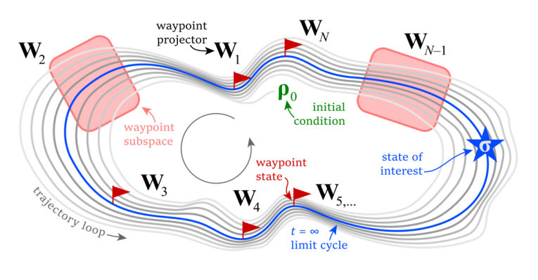
<figcaption class="paper-figure-caption"><b>Fig 1.</b> Figure 1. A schematic illustration of steady orbit optimal control. The system starts at the initial state ρ0 and evolves under a periodic external control sequence. The original gradient ascent pulse engineering GRAPE method26,27 designs a one-off control sequence that takes the system to a fixed destination state σ. The formalism proposed here designs instead a periodic control sequence that makes the system approach the blue attractor loop in the state space, con- strained by waypoint projectors Wn enforcing a state (red flag) or a subspace (red area). Such problem settings are not supported by existing average Hamiltonian and Floquet-Lindblad type theories, but they are common in...</figcaption>
</figure>
<figure class="paper-figure-card">
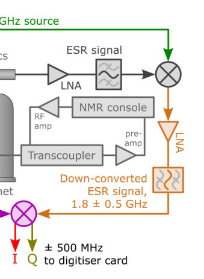
<figcaption class="paper-figure-caption"><b>Fig 2.</b> Figure 2. Simplified schematic of the HiPER pulsed EPR/DNP spectrometer operating at 3.4 T. Integration of an arbitrary waveform generator (AWG) into the heterodyning enables con- venient pulse shaping at 94 GHz and coherent quadrature detection of the EPR signal. For further details, see the papers describing HiPER76 and its upgrades77.</figcaption>
</figure>
<figure class="paper-figure-card">
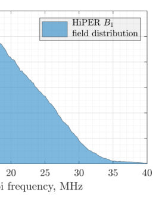
<figcaption class="paper-figure-caption"><b>Fig 3.</b> Figure 3. Distribution of the electron Rabi frequencies in the HiPER instru- ment at 7.5 dB attenuation. Obtained from a finite element simulation of the shorted waveguide containing the sample tube and sample. Reproduced from Figure 8 of Zhao et al.77 For DNP pulse sequence optimisation, this distribution was approximated by a uniform distribution between 5 and 25 MHz.</figcaption>
</figure>
<figure class="paper-figure-card">
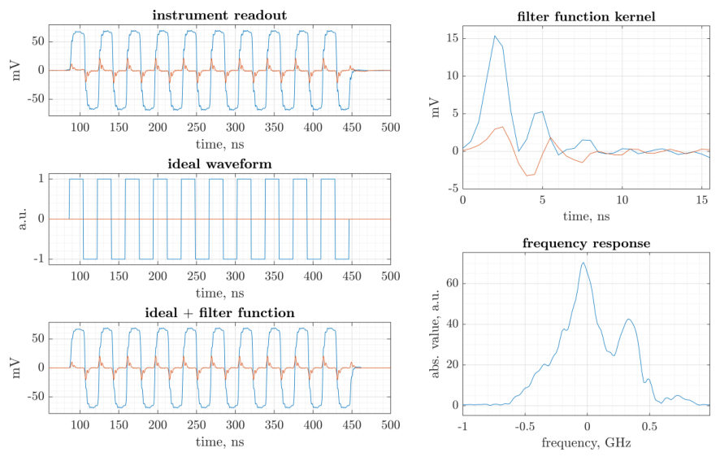
<figcaption class="paper-figure-caption"><b>Fig 4.</b> Figure 4. HiPER instrument filter function including the detection circuit. (Left panel) Ideal X-inverse-X pulse se- quence (the phases of the pulses alternate between 0° and 180°, pulse duration 18 ns) as measured by the instrument (top left), as programmed into the AWG (middle left), and as modelled by Spinach when the filter function is applied to the ideal sequence (bottom left). (Right panel) Filter function of the HiPER instrument in the time domain (top right, real and imaginary components shown) and in the frequency domain (bottom right).</figcaption>
</figure>
<figure class="paper-figure-card">
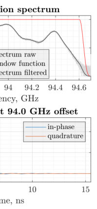
<figcaption class="paper-figure-caption"><b>Fig 5.</b> Figure 5. Waveform distortions induced in HiPER’s ex- citation branch. (Top panel) Transmission spectrum and (bottom panel) filter function kernel (in-phase and out-of- phase components). The indicated window function was applied to the transmission spectrum before extraction of the filter function by the inverse Fourier transform.</figcaption>
</figure>
</div>

<p><strong>Summary.</strong> This paper introduces an advanced optimal control technique, SO-GRAPE, designed to steer dissipative quantum systems toward stable, asymptotically approached steady orbits or limit cycles. By modifying the standard GRAPE framework with waypoint projectors, it overcomes the computational hurdle posed by infinite time evolution. This method is demonstrated successfully in optimizing complex pulsed DNP sequences for solid-state NMR, showing how realistic hardware limitations must be incorporated into theoretical control design.</p>
<p><strong>Why it may be interesting.</strong> This work is highly relevant as it tackles a major computational bottleneck—controlling asymptotic states—in open quantum systems. The extension of GRAPE to limit cycles provides a powerful new tool for designing robust control pulses in quantum optics and metrology.</p>
<details>
<summary>Detailed structure</summary>
<p><strong>Main problem.</strong> The core problem is developing an efficient quantum optimal control strategy for reaching asymptotically approached steady orbits or limit cycles in periodically driven, dissipative quantum systems.</p>
<p><strong>Main result.</strong> The authors propose and implement a 'steady-orbit GRAPE' method that successfully drives the system towards these asymptotic states while maintaining computational complexity comparable to standard GRAPE techniques.</p>
<p><strong>Method.</strong> The approach extends Gradient Ascent Pulse Engineering (GRAPE) by incorporating waypoint projectors into the Liouville space evolution. It uses Newton-Raphson methods to efficiently calculate the steady state, avoiding direct simulation of infinite time propagation.</p>
<p><strong>Model / system.</strong> The system is a periodically driven dissipative quantum system modeled using the density operator formalism ($
ho$). Applications include cooling engines, lasers, atomic clocks, and specifically, pulsed Dynamic Nuclear Polarization (DNP) experiments in solid-state NMR.</p>
<p><strong>Key observables.</strong> Fidelity of approach to the steady orbit, longitudinal nuclear magnetization ($Z = \sigma_I / I$), and the asymptotic state $
ho_{    ext{ss}}$.</p>
<p><strong>Important parameters / regimes.</strong> The number of discrete time steps ($N$), the control sequence period, and instrumental parameters like filter functions ($\mathcal{H}$) and Rabi frequency distributions.</p>
<p><strong>Assumptions / limitations.</strong> The method assumes dissipation is present to ensure the desired orbit is an attractor. It also relies on the existence of an inverse for $(1 - P)$, guaranteed by strong dissipation.</p>
<p><strong>Figures summary.</strong> Figures illustrate the contrast between standard GRAPE (targeting a fixed state) and the proposed method (enforcing passage through waypoints). Later figures detail experimental setups, filter function measurements comparing ideal vs. realistic hardware assumptions, and final magnetization histograms.</p>
<p><strong>Paper structure.</strong> The paper introduces the theoretical challenge of steady-state control for dissipative systems, details the SO-GRAPE formalism using waypoint projectors in Liouville space, applies this method to optimize DNP pulse sequences by incorporating measured instrumental filter functions, and concludes with comparisons against ideal assumptions.</p>
</details>
<details>
<summary>Abstract</summary>
<p>Periodically driven dissipative systems can settle into steady orbits - fixed loops on their dynamical manifolds. In quantum mechanics, steady orbits occur in cooling engines (used to initialise quantum devices), coherent oscillators (such as lasers and masers), precision metrology devices (atomic clocks, optical and spin magnetometers), and magnetic resonance (steady state free precession, dynamic nuclear polarisation). Steady orbits and stroboscopic steady states are a promising target for quantum optimal control, but the numerical complexity is prohibitive: the infinite loop defeats gradient ascent pulse engineering (GRAPE) which relies on explicit numerical propagation in the time domain.   Here we propose an efficient quantum control strategy for stroboscopic steady states and limit cycles that are approached asymptotically when a control sequence is repeated infinitely many times. The formalism is different from Floquet-Lindblad state engineering and effective Hamiltonian theories: it finds control sequences that drive a dissipative quantum system towards a steady orbit passing through user-specified waypoints. The software implementation (same numerical complexity scaling as GRAPE) is done for the Spinach library.</p>
</details>
<p><sub><a href="#top">↑ back to top</a></sub></p>

<p><a id="paper-2606.15382"></a></p>
<h3 id="single-image-entanglement-verification-with-spatially-encoded-measurement-contexts"><a href="http://arxiv.org/abs/2606.15382v1">Single-Image Entanglement Verification with Spatially Encoded Measurement Contexts</a></h3>
<p><strong>Authors:</strong> Nazanin Dehghan, Alessio D'Errico, Yingwen Zhang, Hugo Defienne, Daniele Faccio, Ebrahim Karimi<br>
<strong>Type:</strong> experiment · <strong>Category:</strong> other · <strong>PDF:</strong> <a href="https://arxiv.org/pdf/2606.15382v1">https://arxiv.org/pdf/2606.15382v1</a><br>
<strong>Analysis basis:</strong> full PDF text, analyzed in chunks
<strong>Topic relevance:</strong> 🔥 <code>quantum optics experiment</code> <strong>4/5</strong> · <code>interference shaping light</code> <strong>3/5</strong> · <code>quantum measurements</code> <strong>3/5</strong> · <code>QC/QI experiment</code> <strong>2/5</strong> · <code>entanglement &amp; information structure</code> <strong>1/5</strong> · <code>measurement-induced transitions</code> <strong>1/5</strong></p>
<div class="figure-strip-hint">↔ Scroll figures horizontally</div>
<div class="paper-figures-scroll">
<figure class="paper-figure-card">

<figcaption class="paper-figure-caption"><b>Fig 1.</b> Figure 1. Single-shot readout of structured entanglement with spin-orbit metasurfaces. (a) Experimental implementation. A 355-nm pump laser illuminates a pair of BiBO crystals, generating polarization-entangled photon pairs by spontaneous parametric down-conversion (SPDC). The down-converted photons are sent through either a q-plate or a CHSH plate and are then imaged onto a time-stamping camera (Tpx3Cam), which records spatially resolved coincidence events. SP, short-pass filter; p-BiBO, paired BiBO crystals, LP, long-pass filter; L, lens; PBOE, Pancharatnam–Berry optical element. Photographs of the fabricated PBOEs between crossed polarizers are shown in the inset. (b) Coincidence images...</figcaption>
</figure>
<figure class="paper-figure-card">

<figcaption class="paper-figure-caption"><b>Fig 2.</b> Figure 2. Single-shot CHSH measurement with the metasurface. (a) Spatial pattern of the optic-axis orientation in the CHSH plate, which encodes the different polarization projections across the transverse plane. (b) Coincidence image of the SPDC photons after transmission through the CHSH plate. Different azimuthal sectors correspond to projections onto distinct linear polarization states, leading to characteristic variations in the photon distribution around the ring. (c) Comparison between the CHSH parameters extracted from the azimuthal sectors in b using a single measurement and those obtained with the benchmark setup based on 16 sequential polarization measurements, as seen in the...</figcaption>
</figure>
<figure class="paper-figure-card">

<figcaption class="paper-figure-caption"><b>Fig 3.</b> Figure 3. Programmable CHSH measurement using spatial light modulators. (a) Phase mask applied to the SLM for the CHSH measurement. The pattern combines the angular “pizza” phase mask, which implements the 16 joint polarization projections, with the phase correction Ψ(x, y) = 4.69k2 x + 5.04k2 y + 0.02 that compensates for the spatial phase distortion of the biphoton state. (b) Intensity distribution of the SPDC field recorded with the SLM pattern applied. Diffraction features appear at the boundaries between adjacent angular sectors. (c) Spatially resolved correlation image G(2)(r, −r) obtained with the EMCCD camera. Each pair of centrosymmetric sectors corresponds to one of the 16 joint...</figcaption>
</figure>
<figure class="paper-figure-card">

<figcaption class="paper-figure-caption"><b>Fig 4.</b> Figure 2-c compares the CHSH parameters obtained from the conventional benchmark measurements (dashed curves), which require 16 sequential polarization projections (see Sup- plementary Materials) with those obtained from the single-shot measurement performed using the CHSH plate (solid curves). For the benchmark data shown in the insets of Fig.2-c, the plot- ted values correspond to azimuthally averaged results. Overall, the two approaches show good qualitative agreement. Residual discrepancies between the two methods can arise from several experimental imperfections. In particular, small misalignments between the CHSH plate and the centre of the SPDC cone can lead to imperfect photon...</figcaption>
</figure>
<figure class="paper-figure-card">

<figcaption class="paper-figure-caption"><b>Fig 5.</b> Figure 2-a shows the corresponding optic-axis pattern θ(x, y), together with an image of the fabricated device viewed between crossed polarizers. The CHSH plate implements a spatially multiplexed Bell measurement in which incompatible measurement contexts coexist across the beam profile. The coincidence image therefore, directly contains the outcomes of all CHSH measurements. After recording coincidence events and post-selecting photon pairs exhibiting sharp transverse momentum anti-correlations [52, 56], we obtain a correlation image that simultaneously contains the results of all 16 joint polarization projections (Fig. 2-b). Each azimuthal slice of the image corresponds to one of the...</figcaption>
</figure>
</div>

<p><strong>Summary.</strong> This paper introduces a novel method to verify entanglement in photon pairs by mapping multiple joint polarization measurements onto the spatial profile of the beam using metasurfaces or SLMs. This technique allows for single-shot, parallel testing of Bell inequalities across the transverse plane, significantly enhancing the speed and scalability of quantum characterization.</p>
<p><strong>Why it may be interesting.</strong> This work provides a powerful experimental blueprint for quantum optics that moves beyond sequential measurements. The concept of encoding measurement settings spatially is highly relevant for developing scalable quantum sensors and imaging techniques.</p>
<details>
<summary>Detailed structure</summary>
<p><strong>Main problem.</strong> The primary challenge is characterizing the rich spatial entanglement structure of photon pairs generated by spontaneous parametric down-conversion (SPDC), which is difficult using conventional measurement techniques.</p>
<p><strong>Main result.</strong> The authors demonstrate that spatially structured optical elements, such as liquid-crystal metasurfaces, can transform Bell tests into parallel measurements distributed across the transverse plane, enabling rapid characterization of entanglement.</p>
<p><strong>Method.</strong> They employ a technique where the spatial coordinate acts as a classical register to select measurement contexts, allowing multiple joint polarization projections (e.g., 16 for a CHSH test) to be measured simultaneously in a single acquisition.</p>
<p><strong>Model / system.</strong> The system uses entangled photon pairs from SPDC and utilizes advanced optical components like q-plates and liquid-crystal metasurfaces (CHSH plates). These devices encode polarization information into the spatial structure of the emitted photons.</p>
<p><strong>Key observables.</strong> Spatially resolved coincidence images, CHSH parameters ($S$), and interference patterns modulated by wavefront curvature.</p>
<p><strong>Important parameters / regimes.</strong> The classical bound for Bell tests ($|S| \le 2$) versus the quantum prediction; spatial frequency ($q$); and polarization projection bases (e.g., $\{|D
angle, |A
angle\}$).</p>
<p><strong>Assumptions / limitations.</strong> The core assumption is that the transverse coordinate can be treated as a classical register selecting the measurement context for parallel measurements.</p>
<p><strong>Figures summary.</strong> Figures illustrate experimental setups using q-plates and metasurfaces; they show coincidence images exhibiting spatial modulation (e.g., $8q$-fold patterns) and reconstructed maps of CHSH parameters demonstrating entanglement violation.</p>
<p><strong>Paper structure.</strong> The paper progresses from initial demonstrations using q-plates to implementing a fully multiplexed Bell test using a liquid-crystal metasurface, followed by an alternative programmable realization using a Spatial Light Modulator (SLM), culminating in quantitative verification of Bell inequality violations.</p>
</details>
<details>
<summary>Abstract</summary>
<p>Entangled photon pairs produced by spontaneous parametric down-conversion exhibit rich spatial entanglement structure that is often difficult to probe with conventional measurements. Here, we show that spin-orbit optical elements can convert this spatial structure into directly observable quantum interference patterns. Using a $q$-plate, we demonstrate that the relative wavefront curvature of biphoton states generated by a pair of nonlinear crystals can be retrieved from the spatial modulation of coincidence images. Building on this principle, we introduce a liquid-crystal metasurface that performs spatially multiplexed Bell measurements across the transverse profile of the photon field. The device, which we call a Clauser-Horne-Shimony-Holt (CHSH) plate, assigns different polarization projections to different azimuthal sectors of the beam, allowing the sixteen joint measurements required for a CHSH test to be realized simultaneously in a single acquisition. In this architecture, the spatial coordinate acts as a classical register selecting the measurement context, while photon pairs sample these contexts according to their emission directions. We further demonstrate that the same measurement concept can be implemented using a programmable spatial light modulator, providing a dynamically reconfigurable realization of the scheme. Our results show that spatially structured optical elements can transform Bell tests into parallel measurements distributed across the transverse plane, enabling rapid characterization of spatially varying entanglement. This approach opens new possibilities for structured-light quantum measurements, Bell-inequality-based imaging, and the study of spatially engineered entangled photon sources.</p>
</details>
<p><sub><a href="#top">↑ back to top</a></sub></p>

<p><a id="paper-2606.15227"></a></p>
<h3 id="cosmological-pseudo-entropy"><a href="http://arxiv.org/abs/2606.15227v1">Cosmological Pseudo-Entropy</a></h3>
<p><strong>Authors:</strong> Manghang Limbu, Pramod Kamal Kharel, Rohit Bhattarai, Kiran Adhikari<br>
<strong>Type:</strong> theory · <strong>Category:</strong> other · <strong>PDF:</strong> <a href="https://arxiv.org/pdf/2606.15227v1">https://arxiv.org/pdf/2606.15227v1</a><br>
<strong>Analysis basis:</strong> full PDF text, analyzed in chunks
<strong>Topic relevance:</strong> 🔥 <code>entanglement &amp; information structure</code> <strong>4/5</strong> · <code>non-equilibrium dynamics</code> <strong>2/5</strong> · <code>non-equilibrium universality</code> <strong>2/5</strong> · <code>Keldysh / 2PI / non-Gaussian methods</code> <strong>1/5</strong> · <code>analog quantum simulation</code> <strong>1/5</strong> · <code>correlated / nonlocal dissipation</code> <strong>1/5</strong> · <code>driven-dissipative phase transition</code> <strong>1/5</strong> · <code>methods for driven-dissipative</code> <strong>1/5</strong></p>
<div class="figure-strip-hint">↔ Scroll figures horizontally</div>
<div class="paper-figures-scroll">
<figure class="paper-figure-card">

<figcaption class="paper-figure-caption"><b>Fig 1.</b> Figure 1: Real and imaginary parts of the pseudo entropy S plotted as a function of ϕ1 −ϕ2 for fixed r1 = 1 and various r2. Curves saturate to a common envelope as r2 ≳3.</figcaption>
</figure>
<figure class="paper-figure-card">

<figcaption class="paper-figure-caption"><b>Fig 2.</b> Figure 2: Real and imaginary parts of the pseudo entropy S as a function of the scale factor a in de Sitter background between a fixed reference state with parameters r(i) k = 10, ϕ(i) k = π, and the evolved state. The mode k = 0.01 is fixed, while sound speeds are varied.</figcaption>
</figure>
<figure class="paper-figure-card">

<figcaption class="paper-figure-caption"><b>Fig 3.</b> Figure 3: Pseudo entropy S as a function of the scale factor a in de Sitter background between a different initial squeezed state and the analytically evolved mode state, for fixed k = 0.01, and cs = 1.0.</figcaption>
</figure>
<figure class="paper-figure-card">

<figcaption class="paper-figure-caption"><b>Fig 4.</b> Figure 4: pseudo entropy S as a function of the scale factor a for expanding backgrounds with fixed k = 0.001, r(i) k = 10, and φ(i) k = −π/2.</figcaption>
</figure>
<figure class="paper-figure-card">

<figcaption class="paper-figure-caption"><b>Fig 5.</b> Figure 5: pseudo entropy S as a function of the scale factor a for contracting backgrounds with fixed k = 0.001, r(i) k = 10, and ϕ(i) k = π/2. The a-axis is inverted to reflect the contracting evolution.</figcaption>
</figure>
</div>

<p><strong>Summary.</strong> This work introduces and analyzes 'pseudo entropy,' a sophisticated measure of quantum correlation that generalizes standard entanglement entropy by retaining phase information. By applying it to cosmological perturbations, the authors show that pseudo entropy provides a unique diagnostic tool capable of distinguishing between different spacetime dynamics (e.g., accelerating vs. decelerating) based on how its real and imaginary parts evolve over time.</p>
<p><strong>Why it may be interesting.</strong> While focused on cosmology, the methodology—using generalized entanglement/complexity measures sensitive to relative phases ($   ext{Im}(\mathcal{S})$)—is highly relevant for characterizing quantum correlations in open or time-dependent systems studied in AMO physics.</p>
<details>
<summary>Detailed structure</summary>
<p><strong>Main problem.</strong> The study investigates pseudo entropy ($\mathcal{S}$) as a generalized measure of quantum correlations for scalar cosmological perturbations in various expanding and contracting spacetime backgrounds.</p>
<p><strong>Main result.</strong> Pseudo entropy captures phase information via its imaginary part, making it a finer diagnostic than entanglement or circuit complexity; its behavior (saturation vs. oscillation) distinguishes different cosmological regimes ($w$).</p>
<p><strong>Method.</strong> The analysis involves deriving the pseudo entropy from the transition matrix of Bogoliubov transformations governing the mode functions in curved spacetime.</p>
<p><strong>Model / system.</strong> The system is quantum field theory applied to scalar perturbations ($
u$) in FLRW backgrounds (de Sitter, expanding/contracting). The dynamics are governed by a parametric oscillator equation derived from an effective action.</p>
<p><strong>Key observables.</strong> Pseudo entropy ($\mathcal{S}$), $    ext{Re}(\mathcal{S})$, $    ext{Im}(\mathcal{S})$, Entanglement Entropy ($ ext{SEE}$), Krylov complexity, and Nielsen circuit complexity.</p>
<p><strong>Important parameters / regimes.</strong> Equation-of-state parameter ($w$), sound speed ($c_s$), relative phase difference ($\Delta\phi$), and the scale factor evolution ($a$).</p>
<p><strong>Assumptions / limitations.</strong> The analysis is restricted to scalar perturbations in the longitudinal gauge, assuming vanishing anisotropic stress.</p>
<p><strong>Figures summary.</strong> Figures illustrate the time/scale-factor evolution of $    ext{Re}(\mathcal{S})$ and $ ext{Im}(\mathcal{S})$ across different background types (e.g., de Sitter vs. decelerating), showing saturation or oscillatory behavior.</p>
<p><strong>Paper structure.</strong> The paper progresses by defining pseudo entropy, calculating its evolution in specific backgrounds like de Sitter space, comparing it quantitatively against other complexity measures, and finally establishing universal scaling laws relating these diagnostics to the background equation of state $w$.</p>
</details>
<details>
<summary>Abstract</summary>
<p>We study pseudo entropy $\mathcal{S}$, a recent generalization of entanglement entropy, for scalar cosmological perturbations in de Sitter space with sound speed $0.024 \leq c_s \leq 1$, and in expanding and contracting FLRW backgrounds with varying equation-of-state parameter $w$. In de Sitter space, $\mathrm{Re}(\mathcal{S})$ grows after horizon exit while $c_s$ controls its onset and saturates at late times. A similar saturation occurs in expanding-accelerating and contracting-decelerating backgrounds. In contrast, expanding-decelerating and contracting-accelerating backgrounds show large early-time $\mathrm{Re}(\mathcal{S})$ followed by oscillations after horizon re-entry. This happens because while the squeezing freezes, the squeezing angle doesn't. Unlike entanglement entropy, pseudo entropy possesses an imaginary part, $\mathrm{Im}(\mathcal{S})$, as well, which can encode the relative phase. $\mathrm{Im}(\mathcal{S})$ decays to zero in de Sitter and expanding-accelerating cases, but forms dense sub-Hubble oscillation bands in expanding-decelerating and contracting-accelerating backgrounds. Compared with entanglement entropy, Krylov complexity, and Nielsen circuit complexity, pseudo entropy captures otherwise hidden phase information; in the unsaturated regime, its slope is $\sqrt{2}$ times that of Nielsen complexity. Unlike circuit complexity, whose saturation bound is $w$-independent, pseudo entropy is sensitive to $w$ during the transition regime, making it a finer information theoretic diagnostic of cosmological dynamics.</p>
</details>
<p><sub><a href="#top">↑ back to top</a></sub></p>

<p><a id="paper-2606.16932"></a></p>
<h3 id="experimental-quantum-state-learning-with-pairs-of-photons"><a href="http://arxiv.org/abs/2606.16932v1">Experimental quantum state learning with pairs of photons</a></h3>
<p><strong>Authors:</strong> C. Pria Dobney, Johan Henaff, Allen Kasum, Rui Jie Tang, Haru Mukumoto, Mark Hillery, Berthold-Georg Englert, Aephraim Steinberg<br>
<strong>Type:</strong> experiment · <strong>Category:</strong> quantum information and computing · <strong>PDF:</strong> <a href="https://arxiv.org/pdf/2606.16932v1">https://arxiv.org/pdf/2606.16932v1</a><br>
<strong>Analysis basis:</strong> full PDF text, analyzed in chunks
<strong>Topic relevance:</strong> 🔥 <code>QC/QI experiment</code> <strong>4/5</strong> · <code>quantum optics experiment</code> <strong>3/5</strong> · <code>entanglement &amp; information structure</code> <strong>2/5</strong> · <code>quantum measurements</code> <strong>2/5</strong> · <code>interference shaping light</code> <strong>1/5</strong> · <code>measurement-induced transitions</code> <strong>1/5</strong></p>
<div class="figure-strip-hint">↔ Scroll figures horizontally</div>
<div class="paper-figures-scroll">
<figure class="paper-figure-card">

<figcaption class="paper-figure-caption"><b>Fig 1.</b> FIG. 1. Schematic showing the experimental protocol. (a) Alice sends a stream of single photons to Bob. Bob performs quantum state tomography (QST) on the sequence and ob- tains the single-qubit density matrix, ρsingle of Eq. (1). (b) After the measurement, Alice tells Bob which photons are in a ‘pair’. From this ‘paired data’, Bob obtains the two- qubit density matrix ρpair of Eq. (2), which can be decom- posed uniquely into pure product states and their respective probabilities. The pairs needn’t be nearest neighbours (in time); any choice of pairing identification suffices.</figcaption>
</figure>
<figure class="paper-figure-card">

<figcaption class="paper-figure-caption"><b>Fig 2.</b> FIG. 2. Schematic of the experimental setup. A type-I, degen- erate, non-collinear spontaneous parametric down-conversion (SPDC) process where on average 3500 pairs of 808 nm pho- tons are detected per second. One photon is immediately de- tected whilst the other is sent through the experiment. These heralded single photons pass through a liquid-crystal wave plate (LCWP) which rotates the polarization of the incident photons by an amount dependent on the voltage applied to the crystal in order to generate a statistical mixture of po- larization states |ψ0⟩and |ψ1⟩as in Eq. (1). The ensemble of single photons is measured at six different output ports of a polarization tomography, where each...</figcaption>
</figure>
<figure class="paper-figure-card">

<figcaption class="paper-figure-caption"><b>Fig 3.</b> FIG. 3. Averaged fidelities vs. number of photon pairs of each of the states (pink curves: |ψ0⟩; teal curves: |ψ1⟩) determined from the decomposition of the paired density matrix ρ′ in Eq. (2). (a) and (b): |ψ0⟩and |ψ1⟩are orthogonal to each other but appear (a) with equal probability (p0 = p1 = 0.5) and (b) with unequal probability (p0 = 0.75, p1 = 0.25). (c) and (d): |ψ0⟩and |ψ1⟩are not orthogonal to each other but appear (c) with equal probability (p0 = p1 = 0.5) and (d) with unequal probability (p0 = 0.75, p1 = 0.25). The solid lines are the median values after 50 repeats of the fidelity calculation. Since the fidelity is not a linear metric and our data are not Gaussian-distributed, we...</figcaption>
</figure>
<figure class="paper-figure-card">

<figcaption class="paper-figure-caption"><b>Fig 4.</b> FIG. 4. Plots of the fidelity between the two states in the ensemble (|ψ0⟩and |ψ1⟩) against the angle between the two state vectors. Points connected by dashed lines are the fidelity between state |ψ0,pairs⟩(|ψ1,pairs⟩) calculated from the pair- state density matrix with |ψ1,tomo⟩(|ψ0,tomo⟩) measured from single-qubit tomography. In the upper (lower) plot, points connected by solid lines are the fidelity between |ψ0,pairs⟩ (|ψ1,pairs⟩) from the pair-state density matrix and |ψ0,tomo⟩ (|ψ1,tomo⟩) measured from single-qubit tomography. As the two states get closer to each other on the Poincar´e sphere, it becomes harder to distinguish the two, and hence we see the two curves overlapping for...</figcaption>
</figure>
<figure class="paper-figure-card">

<figcaption class="paper-figure-caption"><b>Fig 5.</b> FIG. 5. Fidelity calculated between the pure states in one of two distinct mixtures as a way to compare the two mixed states, in terms of the number of photon pairs N as the distance (angle θ, in degrees) between the two mixtures decreases. Overall, there are two main collections of points forming curves on these four plots. For each case, the fidelity is calculated between the states returned from the pair-state density matrix calculation and the expected state from single-qubit tomography. The pink points are the fidelities between |ψ0,pairs⟩(|ψ1,pairs⟩) from the pair-state density matrix and |ψ0,tomo⟩(|ψ1,tomo⟩) from single-photon tomography measurements, as well as for between ψ′...</figcaption>
</figure>
</div>

<p><strong>Summary.</strong> The research experimentally demonstrates a novel method to uniquely determine the mixed quantum state of polarization using pairs of photons detected via time-of-arrival coincidence measurements. By analyzing these paired data, they successfully estimate the underlying pure states and their mixing probabilities with high fidelity using only tens of thousands of photon pairs.</p>
<p><strong>Why it may be interesting.</strong> This work provides an experimental demonstration of how multi-particle correlations can overcome fundamental limitations in quantum state characterization, which is crucial for building reliable quantum communication protocols.</p>
<details>
<summary>Detailed structure</summary>
<p><strong>Main problem.</strong> The core problem is uniquely determining an unknown quantum state (density matrix) of a mixed ensemble when standard single-particle tomography is insufficient.</p>
<p><strong>Main result.</strong> By utilizing time-of-arrival information to measure pairs of photons, the researchers successfully inferred the specific pure states and their weights with high fidelity using only $\sim 10^4$ photon pairs.</p>
<p><strong>Method.</strong> The protocol involves performing quantum state tomography on single photons and then leveraging coincidence measurements (pairs) to reconstruct a two-photon density matrix, which allows for unique decomposition into pure components.</p>
<p><strong>Model / system.</strong> The system uses polarization degrees of freedom encoded in pairs of entangled or correlated photons generated via Spontaneous Parametric Down-Conversion (SPDC). The state is modeled as a mixture of two pure states, $
ho = p_0 |\psi_0
angle\langle\psi_0| + p_1 |\psi_1
angle\langle\psi_1|$.</p>
<p><strong>Key observables.</strong> Tomography fidelity ($F$), the number of detected photon pairs ($N$), and the angular separation ($    heta$) between the pure states on the Poincaré sphere.</p>
<p><strong>Important parameters / regimes.</strong> The required number of photons scales inversely with the square of the state separation angle, $N_{	ext{req}} \sim 1/	heta^2$.</p>
<p><strong>Assumptions / limitations.</strong> It is assumed that time-of-arrival information can reliably 'pair up' detected single photons to reconstruct the two-photon density matrix.</p>
<p><strong>Figures summary.</strong> Figures illustrate schematics of the setup, showing how single-photon and paired measurements are used. Later figures plot fidelity versus the number of pairs ($N$) for various angular separations ($    heta$), demonstrating scaling laws.</p>
<p><strong>Paper structure.</strong> The paper introduces the limitations of single-particle tomography, proposes the 'learning from pairs' protocol using photon polarization, details the experimental setup (SPDC source), and finally presents quantitative results showing fidelity improvements and distinguishability limits as a function of photon number and state separation angle.</p>
</details>
<details>
<summary>Abstract</summary>
<p>Tomography allows one to estimate the density matrix describing the state an ensemble of quantum systems are prepared in (for example, polarization tomography determines the polarization state of a beam of identically prepared photons). In general, it is not possible to uniquely decompose the density matrix into its pure state components. Agarwal et al. proposed a protocol which, for a mixture composed of any two pure states of a qubit (with arbitrary probabilities), allows an observer to infer not only the density matrix but the identity of those specific pure states and their weights - the additional requirement being that the qubits arrive in pairs, where both qubits in each pair are in the same state. We experimentally demonstrate this learning-from-pairs concept using photons in the polarization degree of freedom. We use tomography to measure a sequence of single photons and make use of their time-of-arrival information to 'pair up' the photons after the measurement. From here we are able to infer the photons' polarization states and their respective probabilities, and we demonstrate this for various different choices of polarization states and ratios. Finally, we investigate our ability to discriminate between two equal mixtures of distinct pairs of orthogonal polarization states. We find that on the order of approx. 10e4 photons is typically enough to achieve tomography fidelities of approximately 0.9999. This is sufficient to discriminate between two different preparations of the same mixed state, differing by angles of less than 5 degrees between the pure states used in the two preparations.</p>
</details>
<p><sub><a href="#top">↑ back to top</a></sub></p>

<p><a id="paper-2606.16312"></a></p>
<h3 id="foundations-of-entropy-in-complex-systems"><a href="http://arxiv.org/abs/2606.16312v1">Foundations of entropy in complex systems</a></h3>
<p><strong>Authors:</strong> Jan Korbel<br>
<strong>Type:</strong> theory · <strong>Category:</strong> statistical mechanics · <strong>PDF:</strong> <a href="https://arxiv.org/pdf/2606.16312v1">https://arxiv.org/pdf/2606.16312v1</a><br>
<strong>Analysis basis:</strong> full PDF text, analyzed in chunks
<strong>Topic relevance:</strong> 🔥 <code>entanglement &amp; information structure</code> <strong>4/5</strong> · <code>non-equilibrium dynamics</code> <strong>2/5</strong> · <code>non-equilibrium universality</code> <strong>2/5</strong> · <code>Keldysh / 2PI / non-Gaussian methods</code> <strong>1/5</strong> · <code>analog quantum simulation</code> <strong>1/5</strong> · <code>correlated / nonlocal dissipation</code> <strong>1/5</strong> · <code>driven-dissipative phase transition</code> <strong>1/5</strong> · <code>methods for driven-dissipative</code> <strong>1/5</strong></p>
<div class="figure-strip-hint">↔ Scroll figures horizontally</div>
<div class="paper-figures-scroll">
<figure class="paper-figure-card">

<figcaption class="paper-figure-caption"><b>Fig 1.</b> Low-resolution page preview, page 2</figcaption>
</figure>
<figure class="paper-figure-card">

<figcaption class="paper-figure-caption"><b>Fig 2.</b> Low-resolution page preview, page 3</figcaption>
</figure>
<figure class="paper-figure-card">

<figcaption class="paper-figure-caption"><b>Fig 3.</b> Low-resolution page preview, page 4</figcaption>
</figure>
<figure class="paper-figure-card">

<figcaption class="paper-figure-caption"><b>Fig 4.</b> Low-resolution page preview, page 5</figcaption>
</figure>
<figure class="paper-figure-card">

<figcaption class="paper-figure-caption"><b>Fig 5.</b> Low-resolution page preview, page 6</figcaption>
</figure>
</div>

<p><strong>Summary.</strong> This comprehensive review explores the foundations of entropy across various physical regimes, moving beyond classical assumptions. It systematically compares generalized entropies (like Tsallis and Rényi) derived from different combinatorial structures, statistical processes, and axiomatic principles. The work emphasizes that a correct description requires selecting an entropy formalism consistent with the system's specific constraints and dynamics.</p>
<p><strong>Why it may be interesting.</strong> It provides a deep theoretical framework connecting information theory (entropy) directly to the underlying physics of equilibrium states in complex many-body systems, which is crucial for understanding non-equilibrium quantum dynamics.</p>
<details>
<summary>Detailed structure</summary>
<p><strong>Main problem.</strong> The paper reviews the foundations of entropy, aiming to determine under what conditions classical statistical mechanics can accurately describe complex systems exhibiting strong correlations or emergent collective behavior.</p>
<p><strong>Main result.</strong> It establishes that the choice of appropriate entropy functional (e.g., Shannon vs. Tsallis) and averaging scheme must be guided by the specific structural properties and physical constraints of the system being modeled.</p>
<p><strong>Method.</strong> The analysis employs a combination of axiomatic derivations, maximum entropy principles (MaxEnt), and comparisons between different statistical ensembles (MB, BE, FD).</p>
<p><strong>Model / system.</strong> The scope covers general statistical mechanical systems, ranging from simple particle statistics to complex models involving structure formation (molecular grouping) and path-dependent dynamics like Pólya urns.</p>
<p><strong>Key observables.</strong> Entropy measures ($H(p)$, $S$), multiplicities ($W(\mathbf{n})$), generalized averages (Kolmogorov–Nagumo), and thermodynamic potentials.</p>
<p><strong>Important parameters / regimes.</strong> Temperature ($eta$), system size ($n 	o \infty$ limit), and various entropy/duality exponents ($\gamma, 
u$).</p>
<p><strong>Assumptions / limitations.</strong> The analysis often relies on the thermodynamic limit for convergence to equilibrium states; generalizations are needed when standard assumptions (like independent sampling) fail.</p>
<p><strong>Paper structure.</strong> The structure progresses from reviewing basic entropy relations and generalized entropies, through deriving canonical statistics from multiplicity counting, extending to structured systems, analyzing path-dependent dynamics, and finally unifying these concepts via axiomatic approaches and nonlinear master equations.</p>
</details>
<details>
<summary>Abstract</summary>
<p>This chapter reviews the foundations of entropy and their extensions to complex systems. We first discuss the relation between Boltzmann's formula, multiplicity, coarse-graining, and Shannon entropy, before introducing generalized entropies such as Rényi, Tsallis, and Burg entropy. We then examine Maxwell--Boltzmann, Bose--Einstein, and Fermi--Dirac statistics, structure-forming systems, sample-space reducing processes, Pólya urns, and nonlinear dynamics. Axiomatic approaches are presented through the Shannon--Khinchin axioms, Tempesta group-composability, Hanel--Thurner asymptotic scaling, Shore--Johnson consistency axioms, and Lieb--Yngvason axioms. Finally, we discuss calibration invariance, Hanel--Thurner--Gell-Mann duality between linear and escort averages, and Kolmogorov--Nagumo averages, showing how the same distribution can arise from different entropies, constraints, or dynamics. These results emphasize that the choice of entropy should be guided by the structure and physical properties of the system.</p>
</details>
<p><sub><a href="#top">↑ back to top</a></sub></p>

<p><a id="paper-2606.16965"></a></p>
<h3 id="how-many-shots-are-enough-for-a-quantum-circuit"><a href="http://arxiv.org/abs/2606.16965v1">How Many Shots Are Enough for a Quantum Circuit?</a></h3>
<p><strong>Authors:</strong> Giuseppe Bisicchia, Alessandro Bocci, Ernesto Pimentel, Antonio Brogi<br>
<strong>Type:</strong> experiment · <strong>Category:</strong> quantum information and computing · <strong>PDF:</strong> <a href="https://arxiv.org/pdf/2606.16965v1">https://arxiv.org/pdf/2606.16965v1</a><br>
<strong>Analysis basis:</strong> full PDF text, analyzed in chunks
<strong>Topic relevance:</strong> 🔥 <code>QC/QI experiment</code> <strong>4/5</strong> · <code>quantum measurements</code> <strong>3/5</strong> · <code>entanglement &amp; information structure</code> <strong>2/5</strong> · <code>measurement-induced transitions</code> <strong>2/5</strong> · <code>methods for driven-dissipative</code> <strong>1/5</strong> · <code>non-equilibrium dynamics</code> <strong>1/5</strong></p>
<div class="figure-strip-hint">↔ Scroll figures horizontally</div>
<div class="paper-figures-scroll">
<figure class="paper-figure-card">

<figcaption class="paper-figure-caption"><b>Fig 1.</b> Fig. 1. Empirical behaviour of static quantum circuit output distributions as the shot count increases. Each line corresponds to a circuit–backend pair.</figcaption>
</figure>
<figure class="paper-figure-card">

<figcaption class="paper-figure-caption"><b>Fig 2.</b> Figure 1 presents empirical evidence of these dynamics. Each line corresponds to a unique pair consisting of a</figcaption>
</figure>
<figure class="paper-figure-card">

<figcaption class="paper-figure-caption"><b>Fig 3.</b> Fig. 2. Heatmaps for 𝜖0.01, 0.025, 0.05, 0.1, and 0.25, for all the divergence metrics and 𝛿values considered.</figcaption>
</figure>
<figure class="paper-figure-card">

<figcaption class="paper-figure-caption"><b>Fig 4.</b> Fig. 3. Heatmaps for Delta and DMA stopping criterion policies, for all the divergence metrics and 𝛿values considered.</figcaption>
</figure>
<figure class="paper-figure-card">

<figcaption class="paper-figure-caption"><b>Fig 5.</b> Fig. 4. Heatmaps for stability window 𝑘1, 3 and 5, for all the divergence metrics and 𝛿values considered.</figcaption>
</figure>
</div>

<p><strong>Summary.</strong> This paper addresses the critical challenge of efficiently determining the minimum number of shots needed for a quantum circuit execution to reach sufficient accuracy. It introduces IncrementalExecution, an online framework that operates without needing specific knowledge of the noise model or circuit structure. This makes it a highly general and practical tool for optimizing resource usage on current noisy quantum hardware.</p>
<p><strong>Why it may be interesting.</strong> While focused on shot counting rather than Hamiltonian simulation, the rigorous statistical analysis and comparison against theoretical bounds provide valuable insights into the fundamental resource scaling laws governing quantum computation fidelity.</p>
<details>
<summary>Detailed structure</summary>
<p><strong>Main problem.</strong> The core problem is determining the minimum number of quantum circuit shots required to achieve a target statistical accuracy, thereby minimizing resource usage on expensive quantum hardware.</p>
<p><strong>Main result.</strong> A novel black-box framework, IncrementalExecution, was proposed that dynamically determines the optimal stopping point by detecting the point of diminishing returns in the empirical output distribution for static circuits.</p>
<p><strong>Method.</strong> The method introduces an online framework that monitors the change in the empirical distribution over successive shot batches, comparing it against a reference estimate (like the full budget estimate) to signal when further shots yield negligible improvement.</p>
<p><strong>Model / system.</strong> The work focuses on executing quantum circuits on Noisy Intermediate-Scale Quantum (NISQ) devices or cloud platforms. The analysis is restricted to static, non-variational circuits where the circuit structure remains fixed across all measurements.</p>
<p><strong>Key observables.</strong> Empirical output distribution ($\hat{P}_n$), divergence metrics (Total Variation Distance, Hellinger distance, Jensen–Shannon divergence), and the point of diminishing returns signal.</p>
<p><strong>Important parameters / regimes.</strong> Target accuracy thresholds ($\delta$), hard shot budgets ($B$), look-back window size ($ au$), and circuit/backend configurations (e.g., 180 unique combinations).</p>
<p><strong>Assumptions / limitations.</strong> The primary assumption for the online method is that the underlying process is stationary (static circuits); it explicitly avoids assumptions about noise models or variational parameter updates.</p>
<p><strong>Figures summary.</strong> Figures and tables provide extensive quantitative comparisons, showing how required shot counts vary across different circuit types (QFT, QAOA, random), increasing noise levels ($\delta$), and comparing results from the proposed method against theoretical bounds (Weissman/Hoeffding).</p>
<p><strong>Paper structure.</strong> The paper progresses by first defining the general problem of sample optimization in a black-box setting. It then reviews existing specialized methods (analytical, adaptive) before introducing IncrementalExecution as a generalized, online solution based on detecting distributional stabilization.</p>
</details>
<details>
<summary>Abstract</summary>
<p>Quantum algorithms require repeated circuit executions, known as shots, to estimate output distributions accurately. Determining the minimal number of shots needed to meet a target accuracy is crucial to reduce costs and resource usage, especially on today's noisy and expensive quantum hardware. In this paper, we address the shot optimisation problem in a black-box setting, where no assumptions are made about the structure of the quantum circuit or the noise model of the backend. We introduce IncrementalExecution, a novel online framework that dynamically determines when to stop executing shots based on the principle of point of diminishing returns: the point at which additional shots no longer significantly alter the empirical distribution of a fixed circuit. The framework supports customisable policies for shot management, enabling flexible trade-offs between execution cost and result fidelity within static execution scenarios. We assess our proposal through an extensive experimental evaluation spanning 33,750 framework configurations across 180 unique static quantum circuit-backend combinations, for a total of 7.3M independent experiments. Unlike prior work that relies on problem-specific knowledge or algorithm-dependent assumptions (e.g., variational or adaptive workflows), our approach is applicable to a large set of static circuits and immediately deployable on current quantum cloud platforms.</p>
</details>
<p><sub><a href="#top">↑ back to top</a></sub></p>

<p><a id="paper-2606.15190"></a></p>
<h3 id="lattice-surgery-for-near-term-experimental-logical-qubit-entanglement-creation-in-planar-architectures"><a href="http://arxiv.org/abs/2606.15190v1">Lattice surgery for near-term experimental logical qubit entanglement creation in planar architectures</a></h3>
<p><strong>Authors:</strong> Lukas Bödeker, Áron Márton, Luis Colmenarez, Ilya Besedin, Andreas Wallraff, Markus Müller<br>
<strong>Type:</strong> both · <strong>Category:</strong> quantum information and computing · <strong>PDF:</strong> <a href="https://arxiv.org/pdf/2606.15190v1">https://arxiv.org/pdf/2606.15190v1</a><br>
<strong>Analysis basis:</strong> full PDF text, analyzed in chunks
<strong>Topic relevance:</strong> 🔥 <code>QC/QI experiment</code> <strong>4/5</strong> · <code>quantum measurements</code> <strong>3/5</strong> · <code>measurement-induced transitions</code> <strong>2/5</strong> · <code>correlated / nonlocal dissipation</code> <strong>1/5</strong> · <code>driven-dissipative phase transition</code> <strong>1/5</strong> · <code>entanglement &amp; information structure</code> <strong>1/5</strong> · <code>methods for driven-dissipative</code> <strong>1/5</strong></p>
<div class="figure-strip-hint">↔ Scroll figures horizontally</div>
<div class="paper-figures-scroll">
<figure class="paper-figure-card">

<figcaption class="paper-figure-caption"><b>Fig 1.</b> FIG. 1. Surface-41 layout. Blue (green) plaquettes denote X (Z) stabilizers. Two independent surface-17 logical qubits, located on the right and left parts of the qubit layout, are enclosed by dashed lines. For the teleportation protocol, the right surface code patch is considered the source and the left is considered the target qubit. Data qubits are represented by red circles, including the three central qubits used during merging. Ancilla qubits are shown as blue and green circles, indicating the type of stabilizer they measure. Grey lines represent all physical connections between qubits.</figcaption>
</figure>
<figure class="paper-figure-card">

<figcaption class="paper-figure-caption"><b>Fig 2.</b> FIG. 2. (a) High-level state teleportation scheme. Color blocks denote each step in the logical surface code circuit. (b) Sketch of quantum teleportation of two surface code patches via lattice surgery. The initialization of the logical state (yellow) ∣ψ⟩L on the left (source) logical qubit and the state ∣+⟩L on the right (target) logical qubit. The joint measurement ZLZL is executed by “merging” (green) of the two individual surface codes. During the merging we consider the newly initialized Z-type stabilizers and the extended X-type stabilizers as the middle-part of the joint code. The final teleportation step shows the “split” step (violet) in which the individual logical qubits are...</figcaption>
</figure>
<figure class="paper-figure-card">

<figcaption class="paper-figure-caption"><b>Fig 3.</b> FIG. 3. Schematic comparison of the used lattice-surgery protocols. The boxes SX and SZ indicate stabilizer measurements on the respective parts of the chip. (a) Fully modular teleportation scheme for the ∣0⟩L state of the surface-17 code. The teleportation of ∣+⟩L is analogous for initializing the left data qubits in ∣+⟩⊗9. All X or Z stabilizers (denoted by the boxes SX and SZ) left (source) and right (target) surface code patch are measured in parallel. This includes the middle region while the patches are merged. The gray background indicates that the according stabilizer measurements can be made conditional on the previous outcomes. The ancilla measurement readouts are not shown; they...</figcaption>
</figure>
<figure class="paper-figure-card">

<figcaption class="paper-figure-caption"><b>Fig 4.</b> FIG. 4. Comparison of the logical teleportation infidelity of fully modular against the depleted teleportation scheme for the surface-17 code for scaling down all physical error param- eter by a factor λ. The decoding is done using MWPM. Error bars are included.</figcaption>
</figure>
<figure class="paper-figure-card">

<figcaption class="paper-figure-caption"><b>Fig 5.</b> FIG. 5. Relative advantage in terms of logical teleportation error rate for comparing the adaptive with the non-adaptive depleted surgery scheme. All error parameters are scaled by λ with respect to the reference values, and the latency of the decision logic of the adaptive scheme is scaled by η with respect to a reference value of 1 µs. An interpolation is shown that is calculated from a grid of 20×20 points.</figcaption>
</figure>
</div>

<p><strong>Summary.</strong> This paper details a lattice surgery protocol to achieve fault-tolerant logical qubit teleportation on superconducting surface code architectures. By comparing modular versus depleted error correction strategies and incorporating adaptive measurement logic, the authors demonstrate pathways for near-term hardware improvements. The results quantify how reducing physical noise rates can boost logical fidelity, guiding future experimental designs.</p>
<p><strong>Why it may be interesting.</strong> For a theorist in open quantum systems, this work provides concrete, resource-aware protocols for implementing complex logical operations (teleportation) under realistic hardware constraints (superconducting qubits), offering insights into the overhead associated with achieving fault tolerance.</p>
<details>
<summary>Detailed structure</summary>
<p><strong>Main problem.</strong> The primary goal is to demonstrate a fault-tolerant protocol for creating entanglement between two logical qubits using lattice surgery, which is crucial for near-term quantum computation.</p>
<p><strong>Main result.</strong> The study shows that adaptive error correction strategies can significantly improve the logical fidelity of teleportation compared to fully modular or standard depleted protocols, especially at low physical noise rates.</p>
<p><strong>Method.</strong> The authors simulate a logical teleportation protocol on superconducting surface code qubits by performing joint logical parity measurements using lattice surgery techniques. They compare various overhead reduction strategies like 'fully modular' versus 'depleted' measurement sequences.</p>
<p><strong>Model / system.</strong> The work is situated in the context of superconducting qubit architectures implementing the surface code ($d=3$ instance). The protocol requires physical qubits arranged on a planar chip to perform logical operations via lattice surgery steps (initialization, merging, splitting, measurement).</p>
<p><strong>Key observables.</strong> Logical fidelity/error probability ($p_L$), average circuit depth, and the performance gain derived from adaptive decision logic.</p>
<p><strong>Important parameters / regimes.</strong> The noise scaling factor ($\lambda \in (0, 1]$) is critical for projecting near-term hardware improvements; the code distance $d$ dictates error correction capability.</p>
<p><strong>Assumptions / limitations.</strong> Key assumptions include using experimentally informed Pauli error rates and analyzing performance by scaling these physical error parameters. The depletion strategy's scalability limit with increasing code distance ($d$) is also noted.</p>
<p><strong>Figures summary.</strong> Figures illustrate the surface-41 layout, the high-level teleportation scheme involving lattice surgery steps (merging/splitting), and comparative plots showing logical infidelity versus noise scaling factor ($\lambda$) for different protocol variants.</p>
<p><strong>Paper structure.</strong> The paper details the theoretical framework of logical teleportation via lattice surgery, compares modular vs. depleted error correction overheads, analyzes performance gains from adaptive measurement logic, and concludes with simulations projecting near-term feasibility based on current superconducting qubit noise parameters.</p>
</details>
<details>
<summary>Abstract</summary>
<p>In the era of early fault-tolerant quantum computing, basic demonstrations of entanglement operations between a few logical qubits are at the frontier of recent developments in quantum computing. In this work, we describe in detail, at both the logical and physical qubit levels, a logical teleportation protocol between two surface code logical qubits based on lattice surgery. We address several aspects of the teleportation protocol pertinent to superconducting qubit architectures. We explore the modularity constraints in the number and location of stabilizer readouts and compare variants of the teleportation protocol in this regard. Additionally, we investigate potential performance improvements related to in-sequence decision logic and the optimal size of the interface region between two surface code patches on a superconducting chip. Based on our simulations, we show possible near-term improvements in lattice surgery protocols that facilitate fault-tolerant quantum computing in superconducting circuit architectures.</p>
</details>
<p><sub><a href="#top">↑ back to top</a></sub></p>

<p><a id="paper-2606.15958"></a></p>
<h3 id="quantum-measurement-and-continuous-markov-processes"><a href="http://arxiv.org/abs/2606.15958v1">Quantum Measurement and Continuous Markov Processes</a></h3>
<p><strong>Authors:</strong> Chris Jackson<br>
<strong>Type:</strong> theory · <strong>Category:</strong> other · <strong>PDF:</strong> <a href="https://arxiv.org/pdf/2606.15958v1">https://arxiv.org/pdf/2606.15958v1</a><br>
<strong>Analysis basis:</strong> full PDF text, analyzed in chunks
<strong>Topic relevance:</strong> 🔥 <code>quantum measurements</code> <strong>4/5</strong> · <code>measurement-induced transitions</code> <strong>3/5</strong> · <code>methods for driven-dissipative</code> <strong>3/5</strong> · <code>Keldysh / 2PI / non-Gaussian methods</code> <strong>1/5</strong> · <code>correlated / nonlocal dissipation</code> <strong>1/5</strong> · <code>driven-dissipative phase transition</code> <strong>1/5</strong></p>
<div class="figure-strip-hint">↔ Scroll figures horizontally</div>
<div class="paper-figures-scroll">
<figure class="paper-figure-card">

<figcaption class="paper-figure-caption"><b>Fig 1.</b> Low-resolution page preview, page 2</figcaption>
</figure>
<figure class="paper-figure-card">

<figcaption class="paper-figure-caption"><b>Fig 2.</b> Low-resolution page preview, page 3</figcaption>
</figure>
<figure class="paper-figure-card">

<figcaption class="paper-figure-caption"><b>Fig 3.</b> Low-resolution page preview, page 4</figcaption>
</figure>
<figure class="paper-figure-card">

<figcaption class="paper-figure-caption"><b>Fig 4.</b> Low-resolution page preview, page 5</figcaption>
</figure>
<figure class="paper-figure-card">

<figcaption class="paper-figure-caption"><b>Fig 5.</b> Low-resolution page preview, page 6</figcaption>
</figure>
</div>

<p><strong>Summary.</strong> This lecture series develops the advanced mathematics required to describe continuous quantum measurements using diffusive meters. It moves from classical analogies involving one-forms to deriving the Fokker-Planck equation governing the Kraus-operator distribution. The work fundamentally addresses whether these complex measurement processes can be modeled or simulated by finite computational resources.</p>
<p><strong>Why it may be interesting.</strong> This work provides a deep mathematical underpinning for open quantum systems dynamics, connecting geometric structures (Lie groups) with stochastic processes (Fokker-Planck equations), which is crucial for understanding measurement backaction in quantum optics and sensing.</p>
<details>
<summary>Detailed structure</summary>
<p><strong>Main problem.</strong> The core problem is developing a rigorous mathematical framework for continuous quantum measurement, specifically analyzing whether the resulting instrument can be automated by classical computation.</p>
<p><strong>Main result.</strong> The theory establishes that the Kraus-operator distribution (KOD) governing diffusive measurements satisfies a Fokker-Planck-Kolmogorov equation. Furthermore, it classifies instruments as 'principal' (automatable) or 'chaotic'.</p>
<p><strong>Method.</strong> The analysis employs advanced stochastic calculus tools, including the Stratonovich product and modified Maurer-Cartan differentials, to handle time-ordered exponentials arising from continuous measurement interactions.</p>
<p><strong>Model / system.</strong> The model focuses on quantum systems undergoing interaction with a diffusive meter (e.g., homodyne detection). The formalism uses Kraus operators ($\Omega$) and the associated Lindbladian generator ($D_L$) derived from system-meter unitary evolution.</p>
<p><strong>Key observables.</strong> Kraus-operator distribution (KOD), $   ext{d}\mu_T(x)$, and the resulting probability of measurement outcomes, $   ext{Prob}_T(x)$.</p>
<p><strong>Important parameters / regimes.</strong> The meter width ($\sigma$), interaction strength ($  heta$), and time interval ($T$) are key parameters defining the measurement process.</p>
<p><strong>Assumptions / limitations.</strong> The analysis heavily relies on approximations in the limit $dt 	o 0$ (Itô calculus rules) and assumes the existence of a left-invariant Haar measure for simplifying the KOD evolution.</p>
<p><strong>Figures summary.</strong> Figures illustrate diagrams related to the polar planimeter setup, showing mathematical forms for canonical one-forms ($\lambda_{	ext{polar}}$) in various coordinate systems.</p>
<p><strong>Paper structure.</strong> The notes progress from classical analogies (planimeters and Lie derivatives) to general quantum measurement theory using Kraus operators. It then transitions to continuous time via Wiener increments, deriving the Lindbladian generator, and finally establishing the Fokker-Planck-Kolmogorov equation for the KOD.</p>
</details>
<details>
<summary>Abstract</summary>
<p>These are the lecture notes for a course on diffusive quantum measuring instruments. They were prepared and delivered at the Perimeter Institute on Mondays and Thursdays, from 2:30 to 4:00 PM, beginning October 27th, 2025 and ending December 11th, 2025. These lectures were recorded and can be found at \textbf{https://pirsa.org/c25038}.</p>
</details>
<p><sub><a href="#top">↑ back to top</a></sub></p>

<p><a id="paper-2606.15414"></a></p>
<h3 id="cluster-based-message-passing-clump-optimization-for-complex-qubo-problems"><a href="http://arxiv.org/abs/2606.15414v1">Cluster-based Message-Passing (CluMP) Optimization for Complex QUBO Problems</a></h3>
<p><strong>Authors:</strong> Paolo Rissone, Stefan Boetcher, Alfonso Amendola, Simone Sala, Federico Ricci-Tersenghi<br>
<strong>Type:</strong> theory · <strong>Category:</strong> disordered systems and neural networks · <strong>PDF:</strong> <a href="https://arxiv.org/pdf/2606.15414v1">https://arxiv.org/pdf/2606.15414v1</a><br>
<strong>Analysis basis:</strong> full PDF text, analyzed in chunks
<strong>Topic relevance:</strong> 🔥 <code>analog quantum simulation</code> <strong>4/5</strong> · 🔥 <code>exotic spin models in light-matter</code> <strong>4/5</strong> · <code>methods for driven-dissipative</code> <strong>3/5</strong> · <code>non-equilibrium dynamics</code> <strong>1/5</strong></p>
<div class="figure-strip-hint">↔ Scroll figures horizontally</div>
<div class="paper-figures-scroll">
<figure class="paper-figure-card">

<figcaption class="paper-figure-caption"><b>Fig 1.</b> FIG. 1. Clusters at controlled frustration. Starting from a random seed (green), a connected cluster is grown until the number of frustrated loops reaches the threshold, ϕ. A loop is frustrated when the product of its couplings is negative. Examples on a 2d LRG show that increasing ϕ yields larger clusters (blue nodes) and a higher number of frustrated loops (violet plaquettes). Boundary nodes (grey), adjacent to at least one external edge but not belonging to the cluster, define the interface with the rest of the graph. Note that for ϕ = 0, the cluster reduces to a single node.</figcaption>
</figure>
<figure class="paper-figure-card">

<figcaption class="paper-figure-caption"><b>Fig 2.</b> FIG. 2. BP on frustrated clusters. Zero-temperature BP updates (Eqs. (6)) on clusters with increasing frustration ϕ for 2d and 3d lattice regular graphs (LRGs; A,B) and random regular graphs with C = 10 (RRGs; C), at V ∼102–104 (100 runs, 28 iterations). LRGs show rapid loss of convergence with increasing ϕ (2d most sensitive), while RRGs remain stable up to ϕ ∼103, allowing clusters up to |C| ∼0.8V . Box plots show medians, interquartile ranges (IQRs), and 1.5 IQR whiskers.</figcaption>
</figure>
<figure class="paper-figure-card">

<figcaption class="paper-figure-caption"><b>Fig 3.</b> FIG. 3. CluMP performance. Performance of τEO, SA, CluMP, and R-CluMP on LRGs (d = 2, 3; A,B) and RRGs (C). Ten samples per graph family, 102 runs per sample. Top: resampled convergence trajectories show the best-so-far energy as a function of the number of elementary operations, nelem (see text). Middle: success rate (blue circles) and average number of effective single-spin iterations (red triangles) to reach Ebest. Bottom: violin plots of the normalized gap ∆Emin/Ebest with embedded box plots (median, IQR, 1.5 IQR whiskers). Cluster methods achieve smaller gaps and higher success rates, with the largest speedup on LRGs.</figcaption>
</figure>
<figure class="paper-figure-card">

<figcaption class="paper-figure-caption"><b>Fig 4.</b> FIG. 4. Statistics of CluMP updates. Correlation between cluster energy change ∆EC(n) and number of flipped spins for LRGs in 2d (A), in 3d (B), and C = 10 RRGs (C). Data aggregate all iterations, runs, and samples for CluMP (top) and R-CluMP (bottom). Marginals show distributions of ∆EC and flip counts; colors indicate BP iterations to convergence (blue: fast, red: slow). Cluster moves may flip up to O(102) spins, largely independent of ∆EC, enabling single-cluster-flip transitions between nearly isoenergetic states. In LRGs, slow BP convergence correlates with ∆EC &gt; 0; in RRGs, this correlation weakens. Resampling in R-CluMP strongly suppresses ∆EC &gt; 0 updates.</figcaption>
</figure>
<figure class="paper-figure-card">

<figcaption class="paper-figure-caption"><b>Fig 5.</b> FIG. 5. CluMP performance under different boundary conditions. Effects of hard (blue squares) and soft (red circles) BP boundary conditions in RRGs with connectivity C = 4 (A) and C = 10 (B). Hard boundary conditions generally yield higher BP convergence rates (top panels), but significantly degrade CluMP performance at low connectivity (bottom panels), effectively reducing the maximum frustration threshold and limiting the accessible cluster size. In contrast, soft boundary conditions produce more robust and reproducible performance across different graph instances.</figcaption>
</figure>
</div>

<p><strong>Summary.</strong> The paper introduces CluMP, a cluster-based message-passing algorithm designed to optimize frustrated QUBO problems by performing collective updates on connected spin clusters. It demonstrates that this approach efficiently navigates complex energy landscapes, significantly outperforming local update methods like Simulated Annealing. The work is crucial for understanding the computational challenges in simulating disordered quantum systems.</p>
<p><strong>Why it may be interesting.</strong> This work provides a powerful, scalable simulation technique for sampling complex energy landscapes inherent in spin glasses. The analysis of how continuous vs. discrete couplings affect optimization algorithms is highly relevant to understanding the limitations of classical solvers when modeling quantum many-body systems.</p>
<details>
<summary>Detailed structure</summary>
<p><strong>Main problem.</strong> The core problem is efficiently finding low-energy configurations (ground states) of complex Quadratic Unconstrained Boolean Optimization (QUBO) problems, which model frustrated Ising spin systems.</p>
<p><strong>Main result.</strong> Cluster-based Message-Passing (CluMP) significantly outperforms local update heuristics by performing collective updates on large clusters, allowing the system to bypass local energy barriers in highly frustrated landscapes.</p>
<p><strong>Method.</strong> The algorithm uses Belief Propagation (BP) theory to guide collective spin updates across connected clusters. A variant, R-CluMP, enhances this by using population annealing and resampling to stabilize low-energy exploration.</p>
<p><strong>Model / system.</strong> The model is an Ising spin system defined on a general graph structure, often studied via QUBO formulations. The complexity arises from 'frustration,' where conflicting couplings create rugged energy landscapes with many metastable states.</p>
<p><strong>Key observables.</strong> Energy gap ($\Delta E_{\min}/E_{	ext{best}}$), average number of elementary operations ($\langle 	ext{nelem} 
angle$), and success rate (proportion of runs reaching the true ground state).</p>
<p><strong>Important parameters / regimes.</strong> Frustration level ($\phi$) controls cluster size; connectivity ($C$) and coupling type (Gaussian vs. $\pm 1$ integer) dictate landscape structure.</p>
<p><strong>Assumptions / limitations.</strong> The method relies on zero-temperature limits of BP updates, which can be sensitive to boundary conditions and graph topology. Furthermore, the advantage diminishes when the energy landscape is dominated by discrete degeneracies from integer couplings.</p>
<p><strong>Figures summary.</strong> Figures compare convergence trajectories ($\Delta E$ vs. operations) and success rates for CluMP/R-CluMP against SA and $ au_{EO}$ on both Lattice Regular Graphs (LRGs) and Random Regular Graphs (RRGs), showing superior performance metrics for cluster methods.</p>
<p><strong>Paper structure.</strong> The paper introduces the challenge of frustrated QUBO optimization, details the CluMP mechanism using BP, presents the R-CluMP enhancement, benchmarks the method across various graph types and coupling distributions, and concludes by analyzing how landscape degeneracy affects algorithmic advantage.</p>
</details>
<details>
<summary>Abstract</summary>
<p>Quadratic Unconstrained Boolean Optimization (QUBO) problems are widespread in both industrial applications and scientific studies. A QUBO problem corresponds to the optimization of a system of Ising spins defined on a generally sparse and heterogeneous graph. When the QUBO problem contains conflicting requests, the corresponding Ising system is frustrated, generating a complex energy landscape, which is hard to explore and optimize. Despite extensive algorithmic and hardware developments, finding low-energy configurations in these systems remains challenging (e.g., local-update heuristics typically become trapped in metastable states), especially when the (possibly frustrated) interactions generate extended correlated domains.   We introduce CluMP (Cluster-based Message-Passing), an algorithm that performs collective updates on connected clusters of spins using information from Belief Propagation (BP). By controlling the amount of frustration within clusters, CluMP enables BP convergence on large subgraphs and proposes nonlocal rearrangements involving up to hundreds of spins in a single move. We benchmark CluMP against state-of-the-art local-update heuristics on spin-glass models defined on several graph topologies, including random regular graphs and lattice regular graphs in two and three dimensions. Cluster moves consistently bypass local trapping and reach lower energies with fewer effective operations than single-spin dynamics. These results demonstrate that frustration-tolerant cluster updates can be implemented efficiently on sparse graphs. The CluMP framework provides a scalable strategy for large-scale combinatorial optimization and inference problems, where exploiting medium- and long-range correlations is key to navigating complex energy landscapes.</p>
</details>
<p><sub><a href="#top">↑ back to top</a></sub></p>
<hr>
<p>
<a href="index.html">← Index</a>
 · <a href="papers_01.html">← Previous</a> · <a href="papers_03.html">Next →</a>
</p>
<hr>

</body>
</html>
